生成时间：2026-05-13T12:47:40+08:00
今日保留论文数：5
高能天体物理重点
1. High-energy Neutrino and Gamma Ray Emission from Clusters-like Perseus
- 来源：arXiv / astro-ph.HE
- 链接：https://arxiv.org/abs/2605.11894v1
- 作者：Saqib Hussain, Gabrijela Zaharijas, Klaus Dolag
- 评分：novelty 7/10，importance 8/10，relevance 10/10，final 9.40/10
- 推荐理由：研究 Perseus-like 星系团中的高能伽马射线和中微子发射，结合 CR 传播、MHD 模拟、IceCube 限制和 CTA 灵敏度；强关联伽马射线/中微子多信使和星系团宇宙线问题。
中文题目：类英仙座星系团中的高能中微子与伽马射线辐射
做了什么：这篇文章计算了类似英仙座星系团、并在中心含有活动星系核的星系团能够产生多少高能伽马射线和中微子。作者的核心目标不是简单把 NGC 1275 这样的中心源当作点源，而是区分中心活动星系核贡献和星系团外层弥散宇宙线与星系团气体、光子相互作用产生的贡献。他们使用三维宇宙学磁流体模拟给出团内介质和磁场结构，再用多维 Monte Carlo 传播宇宙线，包含 pp、pγ、光核等相互作用，并与 IceCube 星系团上限和 CTA 灵敏度比较。主要结论是：如果星系团磁场能在宇宙学时间尺度内束缚低于约 10^17 eV 的宇宙线，类英仙座星系团可能成为可观测的多信使源族，并对弥散中微子和伽马背景有非忽略贡献。
为什么重要：星系团是宇宙中最大的引力束缚结构，包含大量热气体、湍动磁场和潜在宇宙线储库。若宇宙线能长期被困在团内，它们的累积相互作用效率会比瞬时喷流区高得多，从而让星系团成为高能中微子和 TeV 伽马射线的弥散源。这直接关系到 IceCube 弥散中微子背景的来源、CTA 能否分辨扩展伽马辐射，以及活动星系核注入宇宙线后能否在大尺度环境中留下可测痕迹。
理论 / 观测 / 仪器方法价值：这项工作的价值在于把三维宇宙学 MHD 星系团环境、宇宙线传播和次级粒子产生放在同一个框架中，而不是使用过度简化的一维气体剖面或均匀磁场。对理论而言，它检验星系团作为宇宙线 calorimeter 的可行性；对观测而言，它给出 IceCube、CTA 以及未来多信使联合搜索应关注的空间扩展、能谱和弥散背景贡献；对方法而言，它强调磁场拓扑和宇宙线扩散模型是预测中微子通量的关键系统误差。
为什么应该关注：如果你关心高能中微子起源、AGN feedback、星系团非热成分或 CTA 时代的扩展源搜索，这篇文章值得看。它讨论的不是单个耀变体爆发，而是 AGN 注入的宇宙线在星系团尺度上被磁场长期储存后产生的“延迟、多信使余辉”。这类信号一旦被确认，会把宇宙线加速源和大尺度结构环境联系起来，也会改变我们对星系团伽马射线非探测上限的解释。
展开详细解读：文章讲解、背景、理论、重点章节、图表与相关工作
文章详细讲解
科学问题：星系团中是否存在足够多的高能宇宙线，并且它们是否能在团内磁场中被束缚足够长时间，从而通过与团内热气体和辐射场相互作用产生可探测的中微子和伽马射线？以英仙座为代表的近邻富星系团特别关键，因为它既有明亮的中心 AGN NGC 1275，又有致密团内介质和复杂磁场。如果只看高能伽马或中微子到达方向，中心点源和扩展团内弥散辐射可能混在一起；区分二者是判断信号来自喷流内部还是来自星系团宇宙线储库的关键。
作者怎么做：论文使用三维宇宙学磁流体模拟来构造类似英仙座星系团的团内介质密度、温度、湍流和磁场分布，然后在这些结构中传播宇宙线。宇宙线传播不是简单假设 Bohm 扩散或单一扩散系数，而是通过多维 Monte Carlo 追踪粒子在 ICM 和星系际介质中的运动，并加入 pp、pγ、光核以及相关级联过程。作者还考虑了类英仙座源族的宇宙学演化，用来估计这类星系团对弥散中微子和伽马射线背景的总贡献。
关键结果：论文强调一种重要物理图像：由于特殊的星系团磁场构型，能量低于约 \(10^{17}\,\mathrm{eV}\) 的宇宙线可在星系团内滞留接近宇宙学时间尺度。这样即使单次相互作用概率不极高，长期累积也可产生显著的次级中微子和伽马射线。与 IceCube 对星系团的上限比较后，作者认为现有数据已经开始限制较乐观的注入情形；而 CTA 对扩展 TeV 伽马辐射的灵敏度可能使类英仙座星系团成为新的多信使源候选类别。
局限和下一步：最主要的不确定性来自宇宙线注入功率、注入谱、AGN 活动历史、磁场微观湍流谱以及团内扩散模型。三维 MHD 模拟给出了大尺度磁场，但粒子散射依赖的亚网格湍流和等离子体微物理并不完全可解。下一步需要把具体英仙座的 X 射线、射电 mini-halo、法拉第旋转测量、Fermi-LAT 和未来 CTA 图像联合拟合，并在 IceCube-Gen2、KM3NeT 等中微子实验中进行针对扩展星系团模板的搜索。
背景知识
星系团包含大量温度约 \(10^7\)–\(10^8\,\mathrm{K}\) 的热等离子体，其重子质量主要在团内介质中，而不是星系里。团内介质通过 X 射线热辐射被观测到，同时也存在 \(\mu\mathrm{G}\) 量级磁场、湍流、激波、AGN 气泡和射电弥散结构。这些非热成分说明星系团不仅是热等离子体系统，也可能是宇宙线储存器。
英仙座星系团是研究这一问题的天然实验室。它距离近、X 射线明亮，中心有 NGC 1275 这样的活动星系核，同时有复杂的射电 lobes、cavities 和 mini-halo。Fermi-LAT 和 Cherenkov 望远镜长期观测到中心 AGN 的高能辐射，但要从中分离出星系团尺度的扩展 hadronic 辐射非常困难。历史上，许多星系团伽马射线搜索得到的是上限，这些上限常被用来限制团内宇宙线压力占热压的比例。
为什么现在值得重新看：IceCube 已经确认存在天体物理高能中微子背景，但单源归属仍不完整；CTA 将显著提高 TeV 伽马射线角分辨率和扩展源灵敏度；宇宙学 MHD 模拟也能更真实地描述星系团磁场和湍流结构。三者结合让过去“星系团可能是中微子源”的想法变成可以量化检验的模型。
常见误区之一是把星系团视作简单均匀盒子，用一个平均气体密度和一个扩散时间估算通量。实际信号强烈依赖宇宙线在高密度核心还是低密度外层停留、磁场是否形成有效瓶颈、以及 AGN 注入是连续还是间歇。另一个误区是把中心 AGN 点源辐射和团内扩展辐射混为一谈；多信使诊断恰恰要求同时看能谱、角分布和时间变率。
基础理论 / 方法脉络
核心物理图像是：AGN 或结构形成激波加速质子和核，宇宙线进入团内介质后在磁场中扩散或近似被困。它们与热气体质子发生 hadronuclear 相互作用，产生 \(\pi^0\)、\(\pi^\pm\)。中性 pion 衰变为伽马射线，带电 pion 通过 \(\mu\) 衰变链产生中微子。因此中微子和伽马射线在 hadronic 模型中天然相关，但伽马射线还会受到吸收和电磁级联影响。
关键量包括宇宙线注入光度 \(L_{\rm CR}\)、注入谱指数 \(\alpha\)、最大能量 \(E_{\max}\)、团内气体密度 \(n_{\rm gas}(r)\)、磁场 \(B(r)\)、扩散系数 \(D(E,r)\)、逃逸时间 \(t_{\rm esc}\) 和 pp 损失时间 \(t_{pp}\)。当 \(t_{\rm esc}\gg t_{pp}\) 时系统接近 hadronic calorimeter；当 \(t_{\rm esc}\ll t_{pp}\) 时大部分宇宙线逃逸，次级辐射效率低。星系团通常介于二者之间，并且随能量和半径变化。
观测上，伽马射线可用 Fermi-LAT 和 CTA 搜索，重点在中心点源之外的扩展成分及其谱形；中微子可用 IceCube 或 KM3NeT 进行方向相关叠加搜索，但角分辨率和背景处理是挑战。模型的常见退化包括：更高的 \(L_{\rm CR}\) 可被更快扩散抵消；更硬的注入谱可在高能端模仿更高最大能量；气体密度核心和磁场核心的空间重合程度会显著改变表面亮度。系统误差则来自星系团磁场重建、AGN 活动 duty cycle、红移演化和伽马吸收级联处理。
公式与推导
从宇宙线注入开始，常用的源项可写为
其中 \(Q_p\) 是单位能量、体积、时间的质子注入率，\(Q_0\) 由总宇宙线功率归一化，\(f(r,t)\) 描述 AGN 或激波注入的空间和时间分布，\(\alpha\) 是谱指数，\(E_{\max}\) 是最大加速能量。
宇宙线在团内的输运可用扩散-损失方程概括：
其中 \(n_p\) 是宇宙线质子数密度，\(D\) 是扩散系数，第二项表示 pp 相互作用导致的能量损失或粒子损耗。Monte Carlo 传播本质上是在更复杂的三维磁场中数值实现这一输运过程。
pp 相互作用时间尺度近似为
这里 \(n_{\rm gas}\) 是热气体数密度，\(\sigma_{pp}\) 是非弹性 pp 截面，\(\kappa_{pp}\) 是非弹性能量损失比例，\(c\) 是光速。高密度核心会显著缩短 \(t_{pp}\)，因此即使宇宙线注入在中心附近，辐射效率也会对扩散路径非常敏感。
次级中微子或伽马射线体发射率可写成卷积形式：
其中 \(i=\nu,\gamma\)，微分截面给出一个能量为 \(E_p\) 的质子产生能量为 \(E_i\) 的次级粒子的概率分布。
对一个距离为 \(d_L\) 的近邻星系团，观测到的微分通量近似为
其中 \(dV\) 是源体积元，\(\tau_{\gamma\gamma}\) 对伽马射线表示 EBL 或局域光场吸收光深；对中微子可取 \(\tau\approx0\)。这个公式连接了模拟中的三维分布和望远镜测到的能谱。
若考虑一族类英仙座星系团对弥散背景的贡献，可写为
其中 \({\cal R}(z)\) 是源族数密度或活动率演化，\(H(z)\) 是哈勃参数，\(L_i\) 是单源在源系能量处的粒子光度。该式说明单源可探测性和总体弥散背景之间由红移演化和源族丰度联系起来。
模型拟合 / 应用方法
这类工作的拟合对象通常包括伽马射线能谱、角向表面亮度、中微子事件方向相关似然，以及来自射电/X 射线的环境先验。模型参数包括 \(L_{\rm CR}\)、\(\alpha\)、\(E_{\max}\)、注入持续时间、源族演化参数、扩散系数归一化和能量依赖指数、磁场归一化及径向标度。若使用真实 Fermi-LAT 或 CTA 数据，拟合时必须同时包含中心 AGN 点源、银河前景、各向同性背景和扩展星系团模板。
中微子端常用非齐次泊松点过程似然或叠加似然。对每个事件，空间项由事件角误差和源模板卷积得到，能量项由信号谱和大气背景谱给出。对于扩展星系团，不能简单使用点源 PSF；模板宽度会降低峰值显著性，但可利用空间分布区别于中心 AGN。参数后验中，\(L_{\rm CR}\) 与 \(D(E)\)、\(\alpha\) 与 \(E_{\max}\)、源演化与单源归一化通常高度退化。
伽马射线残差图尤其重要：若中心附近残差呈 PSF 形状，可能只是 AGN 建模不足；若残差随团内气体密度或预期宇宙线分布延展，则更支持弥散 hadronic 成分。CTA 分析还要考虑能量相关 PSF、背景接受度、视场边缘系统误差和扩展源模板选择。实际应用中，这篇文章提供的是预测和可探测性框架；真正的参数估计需要把模拟模板与观测计数图逐能段 forward-folding。
重点章节 / 结果段落怎么读
-
数据/模拟设定：读者应首先看作者如何定义“类英仙座”星系团、三维 MHD 模拟的空间分辨率、磁场结构和气体剖面。这里决定了后面所有扩散和相互作用效率，尤其要关注模拟是否能解析核心区磁场和外层湍流。
-
宇宙线传播方法：重点看 Monte Carlo 如何处理粒子轨道、扩散、逃逸边界和能量损失。要确认 pp、pγ、光核反应以及电磁级联是否在相关能段都被纳入，以及低于 \(10^{17}\,\mathrm{eV}\) 的束缚结论来自何种磁场假设。
-
单源英仙座类星系团预测：这一部分通常给出中微子和伽马射线能谱、角分布以及中心源/扩展源分离。读者要看模型是否超过 IceCube 或 Fermi-LAT 现有限制，以及在 CTA 灵敏度曲线附近的能段和空间尺度。
-
源族和弥散背景：这里应关注作者如何设定类英仙座星系团的宇宙学演化和丰度。弥散背景结论通常对红移演化非常敏感，不应只看最终曲线，还要看积分主要来自低红移近邻团还是大量高红移源。
-
讨论和稳健性：重点看作者承认哪些不确定性，例如 AGN duty cycle、宇宙线注入归一化、磁场亚结构和伽马吸收。若附录有不同扩散模型或磁场模型测试，应优先阅读。
建议重点查看的图表
-
星系团气体密度和磁场三维/径向分布图：看核心和外层的 \(n_{\rm gas}\)、\(B\) 是否类似英仙座观测约束，尤其是法拉第旋转允许的范围。
-
宇宙线滞留或逃逸时间随能量变化图：确认 \(E\lesssim10^{17}\,\mathrm{eV}\) 被束缚的结论是否有清晰能量转折，以及不同半径或磁场模型之间差异多大。
-
单源中微子能谱与 IceCube 上限比较图：看模型峰值能量、谱硬度和上限之间的距离，不要只看是否“可探测”，还要看是否已经被现有非探测排除。
-
伽马射线谱与 Fermi-LAT/CTA 灵敏度比较图：检查是否区分中心 NGC 1275 点源与扩展团内成分，以及 EBL 吸收和级联是否改变 TeV 端形状。
-
表面亮度或角向分布图：这是区分中心源和弥散源的关键。应看扩展辐射半径与 CTA PSF、IceCube 角分辨率之间的关系。
-
弥散背景贡献图：看类英仙座星系团对总 IceCube 中微子背景和 EGB/IGRB 的比例，是否在多波段背景约束下自洽。
-
参数扫描或不确定性带：重点看 \(L_{\rm CR}\)、谱指数、最大能量和扩散模型变化后通量范围是否跨越探测阈值。
关键图表逐图导读
图 1：通常应是模拟星系团环境图或径向剖面。横轴可能是半径，纵轴为气体密度、温度或磁场强度；若为二维投影，颜色表示 \(n_{\rm gas}\) 或 \(B\)。读图时要看核心区是否足够致密、磁场是否在百 kpc 到 Mpc 尺度上连续，因为这决定宇宙线是否能被长期限制。陷阱是投影图看起来结构丰富，但真正影响 pp 产额的是宇宙线轨迹与高密度气体的空间重合。
图 2：可能展示宇宙线传播、逃逸时间或到达半径随能量变化。横轴多为 \(E_p\)，纵轴为 \(t_{\rm esc}\)、束缚比例或扩散距离。关键看 \(10^{17}\,\mathrm{eV}\) 附近是否出现明显转折，以及误差带是否来自不同注入位置或磁场实现。不要把某条基准曲线当成普适结论；扩散系数和湍流谱会显著移动转折能量。
图 3：单个类英仙座源的中微子能谱图。横轴为中微子能量，纵轴常为 \(E^2\phi_\nu\)。模型线应与 IceCube 星系团上限或点源/扩展源灵敏度比较。主要结论是模型是否接近现有上限，以及峰值在 IceCube 最敏感能段还是更高能段。陷阱是 IceCube 对扩展源灵敏度不同于点源，不能直接拿点源曲线作严格判据。
图 4：伽马射线能谱与 CTA/Fermi 对比。横轴为 \(E_\gamma\)，纵轴为 \(E^2\phi_\gamma\)，可能同时有中心 AGN 和扩展 hadronic 成分。应看 TeV 端是否被 CTA 探测、GeV 端是否已被 Fermi-LAT 非探测限制。读图陷阱是中心 NGC 1275 变源会污染总谱，扩展模板分析才是关键。
图 5：角向表面亮度或累计通量图。横轴为角距离或物理半径，纵轴为亮度/累计比例。若扩展成分主要在核心内，分离难度大；若在数百 kpc 尺度仍显著，CTA 成像更有优势。注意 PSF 卷积前后的差别。
图 6：弥散背景贡献图。横轴为能量，纵轴为全天天体背景强度，模型带与 IceCube 或 EGB 数据比较。关键看模型是否同时满足中微子和伽马背景限制；若中微子贡献很高但伽马背景超标，则需要吸收、级联或源演化解释。
论文原图 / 可嵌入图片
Fig03
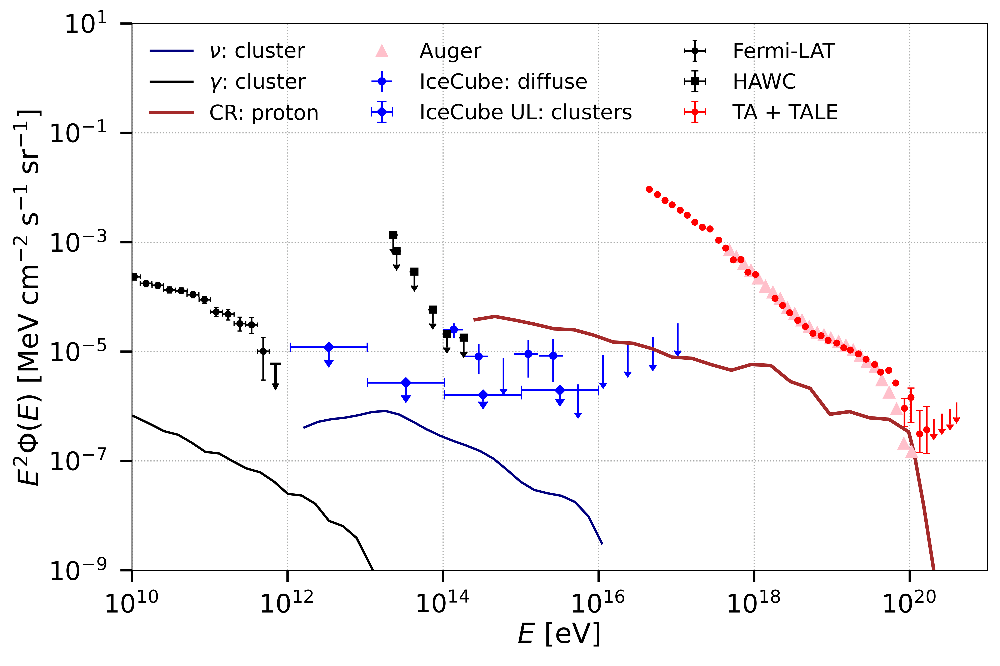
图注：Multi-messenger picture of Perseus cluster, we represent gamma-rays and neutrino emission. The black and blue lines represent the gamma-ray and neutrino spectra, respectively, for Perseus-like clusters within a distance of 80 Mpc. The results are plotted for $\alpha=2.3 \,\&\, E_\text{max}=10^{17}\, \text{eV}$. The diffuse gamma-ray background observed by Fermi-LAT \(\citep{ackermann2015spectrum},\) upper limits predicted by HAWC \(\citep{HAWC2022limits},\) diffuse neutrino background observed by IceCube \(\citep{aartsen2015evidence, aartsen2015searches},\) upper limits for clusters provided by IceCube \(\citep{abbasi2022searching},\) and the CR spectra observed by Auger \(\citep{ICRC342015, halim2022constraining}\) and TA \(\citep{TACRSpectrum2015}\) are also depicted.
对应解读：对应“建议重点查看的图表”第3项单源中微子能谱与 IceCube 上限比较、第6项弥散背景贡献图，以及“关键图表逐图导读”图3和图6的多信使/背景约束解读。
入选理由：这是候选图中科学信息最集中的图：同时给出类英仙座星系团的伽马射线与中微子谱，并叠加 IceCube 弥散中微子背景、IceCube 星系团上限、Fermi-LAT 弥散伽马背景、HAWC 上限以及 Auger/TA 宇宙线谱。它最直接支撑日报中关于模型是否接近 IceCube 限制、是否满足多波段背景约束、以及类英仙座星系团能否成为多信使源族的核心讨论。
来源与置信度：\(arxiv_source\)；high；\(arxiv_source\) / ICRC2025_submit.tex:figure[3]
Fig02
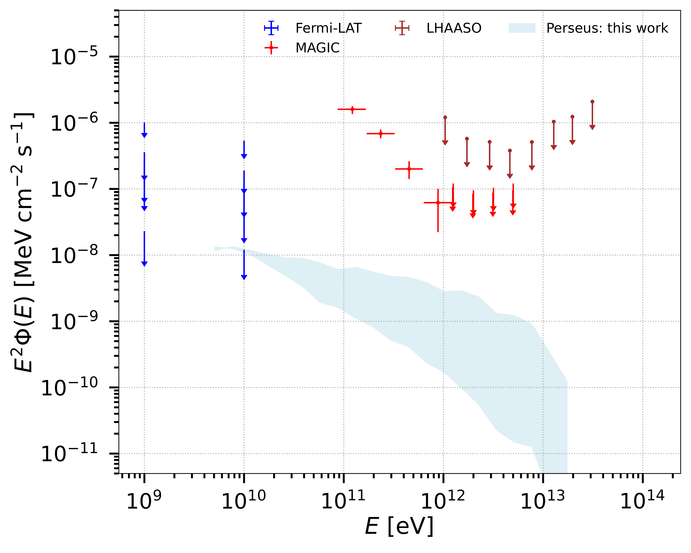
图注：Gamma-ray picture of Perseus cluster. Blue band represents our results for parameters $\alpha= 2.0 - 2.5\, \text{and} \, E_\text{max}=10^{16}- 10^{17} \text{eV}$. The observations and upper limits for the Perseus cluster by experiments such as MAGIC (red error bars) \(\citep{MAGIC2016NGC1275}\) and LHAASO (brown arrows) \(\citep{di2016lhaaso}\) are depicted, respectively. The Fermi-LAT upper limits for massive clusters (blue arrows, top to bottom: A400, A3112, A1367, Coma, EXO0422) \(\citep{FermiCluster2014search}\) are also shown.
对应解读：对应“建议重点查看的图表”第4项伽马射线谱与 Fermi-LAT/CTA 或现有伽马实验灵敏度比较，以及“关键图表逐图导读”图4的伽马射线能谱约束解读。
入选理由：该图专门展示英仙座方向的伽马射线预测带，并与 MAGIC、LHAASO 以及 Fermi-LAT 星系团上限比较；还明确标出参数范围 alpha=2.0–2.5 与 \(Emax=10^16\)–10^17 eV，适合支撑日报中关于 GeV–TeV 端是否已受现有非探测限制、以及不同注入谱和最大能量带来通量不确定性的讨论。
来源与置信度：\(arxiv_source\)；high；\(arxiv_source\) / ICRC2025_submit.tex:figure[2]
Fig01
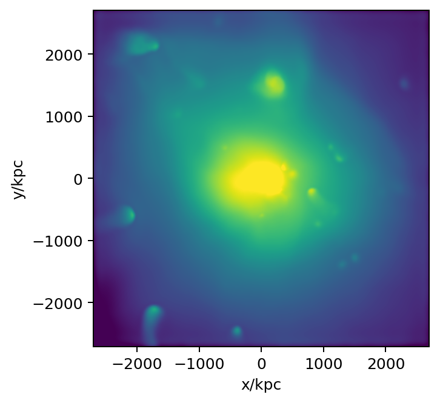
图注：2D map of gas distribution of the Perseus cluster \(\citep{SLOWDolag2023}.\)
对应解读：对应“建议重点查看的图表”第1项星系团气体密度和磁场三维/径向分布图，以及“关键图表逐图导读”图1的模拟星系团环境解读。
入选理由：该图是英仙座星系团气体分布的二维图，可用于说明宇宙线传播和 pp 产额所依赖的团内气体环境，是理解后续中微子和伽马射线产生位置的基础。虽然候选说明中未包含磁场剖面、径向曲线或法拉第旋转约束，因此与日报中磁场滞留细节的匹配不如 Fig02 和 Fig03，但仍是环境建模部分最相关的原图。
来源与置信度：\(arxiv_source\)；high；\(arxiv_source\) / ICRC2025_submit.tex:figure[1]
强相关工作
这篇文章与星系团 hadronic 伽马射线搜索、射电 mini-halo 的次级电子模型、以及 IceCube 源族叠加搜索直接相关。相似工作常检索关键词包括“galaxy clusters cosmic rays neutrinos gamma rays Perseus IceCube CTA”、“hadronic emission intracluster medium”、“cosmic-ray confinement cluster magnetic fields”。已有 Fermi-LAT 对星系团的非探测和 MAGIC/VERITAS/H.E.S.S. 对英仙座或其他团的上限，是判断模型是否过量的基准。
理论基础可追溯到星系团宇宙线长期积累和 pp 产生 \(\pi^0\) 伽马射线的模型，以及结构形成激波和 AGN 注入宇宙线的讨论。相反观点或张力主要来自观测上长期缺乏星系团扩展伽马射线信号：如果宇宙线压力太高或扩散太慢，Fermi-LAT 上限应已看到信号；如果模型为了避开伽马上限而降低归一化，则中微子贡献可能不足。读者应同时检索“Fermi-LAT galaxy clusters upper limits”、“Perseus MAGIC NGC 1275 gamma-ray”、“IceCube stacking galaxy clusters neutrino”。
相似工作：
- https://arxiv.org/abs/2605.11894
- https://ui.adsabs.harvard.edu/search/q=galaxy%20clusters%20cosmic%20rays%20neutrinos%20gamma%20rays
基础理论 / 方法工作：
- https://ui.adsabs.harvard.edu/search/q=cosmic%20ray%20confinement%20galaxy%20clusters%20hadronic%20gamma%20rays
- https://ui.adsabs.harvard.edu/search/q=Perseus%20cluster%20cosmic%20rays%20Fermi%20LAT%20MAGIC
相反观点 / 张力线索：
- https://ui.adsabs.harvard.edu/search/q=Fermi-LAT%20galaxy%20clusters%20upper%20limits%20cosmic%20rays
- https://ui.adsabs.harvard.edu/search/q=IceCube%20galaxy%20clusters%20stacking%20neutrino%20upper%20limits
2. Synergy between the Cherenkov Telescope Array Observatory and the Vera C. Rubin Observatory
- 来源：arXiv / astro-ph.HE
- 链接：https://arxiv.org/abs/2605.11709v1
- 作者：J. Biteau, J. Hamo, A. Mikhno, J. Peloton, J. -P. Lenain
- 评分：novelty 6/10，importance 8/10，relevance 10/10，final 9.10/10
- 推荐理由：直接讨论 CTAO 与 Rubin 的协同，重点覆盖 GRB、AGN/blazar、jetted TDE、TeV-PeV 中微子和 UHECR 候选源，并涉及 Rubin 海量警报筛选与 CTA 跟进策略；IACT/CTA 方向优先级很高。
中文题目：切伦科夫望远镜阵列天文台与 Vera C. Rubin 天文台的协同观测
做了什么：这篇文章讨论 CTAO 与 Rubin/LSST 在未来十年如何协同开展科学，重点落在时域天文学和非热河外瞬变源上。作者指出，两台设施在银河系内变源联合观测上会受到灵敏度、饱和、能段和触发条件限制，但在伽马暴、活动星系核、喷流潮汐瓦解事件等河外高能源上互补性很强。这些源也是 TeV–PeV 中微子和超高能宇宙线候选来源。论文的实际方法案例是用 Rubin 警报经纪系统 Fink，从每晚约千万级警报中筛选少数值得 CTAO 重新指向的耀变体候选，并用耀变体从数天到数年的变率作为测试场景。
为什么重要：Rubin 的强项是大视场、高 cadence、深度光学巡天；CTAO 的强项是 GeV–TeV 甚高能伽马射线灵敏度和快速重新指向。多信使高能天体物理最缺的不是望远镜数量，而是如何在海量警报中挑出真正值得昂贵高能随访的目标。这篇文章把科学互补性和警报筛选工程问题放在一起讨论，因此重要性不只在“两个大设施合作”，而在于为 CTAO 时代的实时触发策略提供了具体路径。
理论 / 观测 / 仪器方法价值：对观测策略而言，文章梳理了 Rubin 与 CTAO 在 AGN、GRB、jetted TDE、宇宙线和中微子源研究中的互补窗口。对仪器运行而言，它强调 alert broker、实时分类、光变特征提取和触发优先级是 CTAO 科学产出的前置条件。对方法而言，耀变体变率案例展示了如何把光学多时间尺度行为转化为 TeV 随访决策，而不是被 Rubin 每晚千万警报淹没。
为什么应该关注：如果你做 CTA、Rubin、时域巡天、AGN 变率、多信使关联或实时管线，这篇文章是未来工作流设计的参考。它提醒我们：多信使发现往往取决于触发选择函数，而不是单纯取决于望远镜灵敏度。谁能定义更好的 Rubin-to-CTAO 触发样本，谁就更可能抓住稀有的 TeV 爆发、光学-伽马相关 flare，以及潜在中微子伴随源。
展开详细解读：文章讲解、背景、理论、重点章节、图表与相关工作
文章详细讲解
科学问题：CTAO 和 Rubin 都是未来十年关键设施，但二者能否真正产生协同科学，取决于能否在正确时间、正确源类上联合观测。Rubin 每晚会产生约千万级警报，而 CTAO 是窄视场、需要重新指向的高能设施，不能盲目跟随大多数光学瞬变。论文要解决的问题是：哪些科学场景最适合 Rubin 触发 CTAO，如何从海量警报中筛出少数高价值候选？
作者怎么做：文章首先系统梳理两台设施的互补性，包括宇宙学、太阳系掩星、银河系变源和河外非热瞬变。随后作者判断最有潜力的交集是时域河外高能源，尤其是伽马暴、AGN/耀变体和带喷流的潮汐瓦解事件。作为方法案例，他们使用 Rubin 警报生态中的 Fink broker，围绕耀变体在数天、数月到数年时间尺度上的变率，展示如何构建触发 CTAO 的筛选逻辑。
关键结果：论文的核心结论是，Rubin 与 CTAO 在银河系内许多变源上并不总是天然匹配，因为 Rubin 可能饱和、CTAO 对源亮度和能谱有严格要求，且 TeV 辐射并非所有光学变源都有。但对非热河外源，光学变率可作为高能活动状态的有效代理之一，尤其在多波段数据和历史分类辅助下，可以显著提高 CTAO 随访的命中率。Fink 这样的 broker 不只是信息转发器，而是把警报流变成物理目标列表的关键环节。
局限和下一步：光学 flare 与 TeV flare 的相关性并不普适，尤其在耀变体中会受到辐射区位置、同步/逆康普顿分量、喷流多区结构和观测 cadence 的影响。Rubin 警报的早期分类、宿主星系污染、光度红移误差和选择效应也会影响触发纯度。下一步需要用真实 LSST 运行数据、Fermi-LAT 实时 light curve、X 射线快速随访和中微子警报共同训练触发策略，并在 CTAO 科学验证阶段建立可量化的收益函数。
背景知识
Rubin Observatory 将执行 Legacy Survey of Space and Time，特点是大视场、深度、多波段和高重复观测。它会在光学时域中发现从太阳系小天体到超新星、AGN、TDE 的海量变化事件。挑战是警报规模极大，单个研究团队或单台随访望远镜不可能逐一处理，因此 alert broker 成为 LSST 科学体系的核心组成部分。
CTAO 是下一代地基甚高能伽马射线天文台，覆盖大约几十 GeV 到数百 TeV 能段，灵敏度、能量覆盖和角分辨率相比当前 IACT 阵列显著提升。它的局限也很明确：视场有限，夜间观测，受天气和月光影响，重新指向和曝光时间需要规划。因此 CTAO 最适合跟随高优先级、物理动机清晰的触发，而不适合被低纯度光学警报流牵着走。
多信使背景使这个问题更紧迫。IceCube 已发现天体物理中微子，TXS 0506+056 等事件提示耀变体可能与部分中微子有关，但总体关联仍存在统计和选择效应争议。GRB、jetted TDE、AGN flare 都是候选源，但稀有、短暂且多波段行为复杂。Rubin 的深度光学时域信息和 CTAO 的 TeV 响应能力结合，可能捕捉到传统高能触发漏掉的状态。
常见误区是认为“Rubin 发现很多瞬变，CTAO 跟上就行”。实际情况是，光学亮不等于 TeV 亮，光学 flare 的时间峰值也不一定对应 TeV 峰值；此外，许多光学警报来自普通恒星变源、小行星、超新星或数据伪迹。另一个误区是只用单次亮度阈值触发，高能源的历史状态、颜色变化、宿主、红移、射电/γ-ray 先验同样重要。
基础理论 / 方法脉络
协同观测的物理基础来自非热辐射过程。耀变体喷流中的相对论电子产生同步辐射，覆盖射电到光学/X 射线；同一电子群可通过逆康普顿散射产生 GeV–TeV 伽马射线。在 hadronic 或 lepto-hadronic 模型中，高能质子相互作用还能产生中微子。因此光学变率可能追踪粒子注入、磁场变化或多普勒因子变化，从而提示 TeV 活动增强。
但光学-TeV 关联不是一一对应。若光学来自较低能电子的同步辐射，而 TeV 来自不同区域的 inverse Compton，二者可有时间延迟或完全脱钩。外部光子场、EBL 吸收、喷流角度、多普勒因子和内部 γγ 吸收都会改变 CTAO 可见性。因此触发策略要用概率评分，而不是简单规则。
Rubin 警报处理的核心逻辑是从差分成像得到候选变化源，提取光变曲线特征、颜色、位置、历史交叉匹配和上下文信息，再由 broker 分类和排序。Fink 这类 broker 可对每晚警报流进行实时机器学习分类，并向下游设施发布筛选后的流。对 CTAO 而言，最重要的输出不是“这个源在变”，而是“在给定天气、可见性、月光、红移、历史高能属性下，随访它的预期 TeV 收益是多少”。
公式与推导
耀变体喷流的观测通量首先受相对论增亮控制。若本征谱为幂律，常写作
其中 \(F_{\nu,\rm obs}\) 是观测频率通量，\(F'_{\nu'}\) 是喷流共动系通量，\(\alpha\) 是谱指数，\(\delta=[\Gamma(1-\beta\cos\theta)]^{-1}\) 是多普勒因子。小的喷流角度或速度变化即可造成强烈光学和伽马变率。
光学同步辐射的特征频率近似为
其中 \(B\) 是磁场，\(\gamma_e\) 是电子洛伦兹因子，\(z\) 是红移。Rubin 观测到的光学 flare 可反映 \(B\)、\(\gamma_e\)、电子数密度或 \(\delta\) 的变化，但这些因素之间存在退化。
若 TeV 辐射来自逆康普顿散射，在 Thomson 极限下特征能量为
其中 \(\epsilon_{\rm seed}\) 是种子光子能量。该式说明同一批电子可能同时影响光学同步和高能 IC，但进入 Klein-Nishina 区域或种子光子场不同后，相关性会变弱。
从警报筛选角度，可把 CTAO 触发写成后验排序问题：
其中 \(D\) 包括 Rubin 光变、颜色、历史分类、红移、Fermi-LAT 状态、可见性等信息。broker 的任务就是快速估计这个后验或等价评分。
实际观测收益还可定义为
其中 \(U_j\) 是候选源 \(j\) 的随访效用，\(P_j({\rm TeV})\) 是 TeV 活动概率，\(S_j\) 是给定曝光时间下预期显著性，\(W_j\) 可表示科学权重如中微子关联或稀有性，\(C_j\) 是机会成本。这个公式把物理分类和观测排程连接起来。
模型拟合 / 应用方法
这类工作的模型拟合分为两层：源物理建模和警报决策建模。源物理层面，可用光变曲线模型、结构函数、功率谱密度、Gaussian process 或随机游走模型描述耀变体长期变率；短时 flare 可用指数上升/衰减、broken power law 或模板匹配。拟合量包括峰值幅度、持续时间、颜色演化、时间延迟和相对于历史基线的显著性。
警报决策层面，Fink 或类似 broker 会把候选的多维特征输入分类器或排序器。似然或后验需要同时考虑真 TeV flare 的先验稀有性、光学 flare 与 TeV flare 的条件概率、分类误差、交叉匹配错误和观测可见性。训练集常来自已知耀变体、Fermi-LAT 监测、ZTF/ASAS-SN 等先导巡天，但 Rubin 更深、更密的选择函数会导致 domain shift。
系统误差和退化关系很关键。光学幅度大的源未必 TeV 亮，红移较高的源因 EBL 吸收在 TeV 端变暗；低同步峰 BL Lac 与高同步峰 BL Lac 的光学-TeV 相关性不同；AGN 宿主和差分成像残差会影响光变测量。实际应用中，残差应看两类：分类残差，即被选样本中有多少不是目标源类；科学残差，即触发后 CTAO 非探测是否来自错误触发、曝光不足、时间延迟，还是物理上不存在 TeV 伴随。
重点章节 / 结果段落怎么读
-
设施能力和互补性概览：先读 Rubin 与 CTAO 的灵敏度、视场、时间响应、饱和限制和观测约束。这里能判断哪些科学目标是真互补，哪些只是概念上相邻。
-
科学案例筛选：重点看作者如何比较宇宙学、太阳系、银河系变源和河外非热源。读者应关注为什么文章认为最有前景的是时域河外源，而不是所有 Rubin 警报都适合 CTAO。
-
多信使候选源讨论：GRB、AGN、jetted TDE 是核心部分。这里要看每类源的光学触发时间尺度、TeV 可见性、与中微子/宇宙线的物理联系，以及需要哪些外部 X 射线或宽视场伽马数据辅助。
-
Fink broker 和警报筛选案例：这是方法上最实用的部分。读者应看输入特征、分类逻辑、耀变体样本定义、时间尺度选择和输出触发列表如何构造。
-
讨论和运行挑战：重点看每晚千万警报到少数 CTAO 触发之间的压缩比、误报代价、观测排程、社区警报标准和未来真实 Rubin 数据的校准需求。
建议重点查看的图表
-
Rubin 与 CTAO 能段/时间尺度互补图：看两台设施覆盖的波段、cadence 和响应时间是否真正匹配目标源类。
-
科学案例矩阵或表格：检查每类源在可探测性、触发可行性、多信使价值和观测限制上的评分，不要只看作者推荐结论。
-
Rubin 每夜警报流到 CTAO 触发的流程图：看 broker、过滤条件、交叉匹配、优先级排序和人工/自动决策节点在哪里。
-
耀变体光变曲线示例：横轴应为时间，纵轴为光学亮度或星等；重点看 flare 定义、历史基线、异常程度和多时间尺度行为。
-
分类或筛选性能图：如 ROC、precision-recall、混淆矩阵或候选数随阈值变化。对稀有触发问题，precision-recall 往往比 ROC 更有意义。
-
CTAO 可见性或预期显著性图：看候选源的天区位置、观测窗口、曝光需求和预期 TeV flux 是否支持实际随访。
-
光学-高能相关诊断图：若有 Fermi-LAT 或已知 TeV blazar 对比，应看光学 flare 与 γ-ray flare 的时间延迟和散布，而不是只看单个成功案例。
关键图表逐图导读
图 1：可能是 CTAO 与 Rubin 的科学互补示意图或能段-时间尺度图。横轴可为时间尺度，纵轴为能量/波段，或用矩阵列出科学主题。读图重点是识别共同可操作区域：河外非热瞬变通常位于天到年时间尺度、光学到 TeV 多波段。陷阱是互补覆盖不等于可联合观测，还要看饱和、可见性和触发延迟。
图 2：若是源类优先级表或矩阵，行可能为 GRB、AGN、TDE、银河系源、小行星掩星等，列为 Rubin 发现能力、CTAO 可探测性、多信使价值。读者应看哪些评分来自物理必然性，哪些来自运行假设。不要把“有科学兴趣”误读为“CTAO 应自动跟随”。
图 3：警报处理流程图。输入端是 Rubin alert stream，中间是 Fink broker 的分类、交叉匹配和过滤，输出端是 CTAO 候选触发。关键看过滤在哪一步把千万级警报降到可观测数量，以及是否保留了不确定性和人工审核接口。读图陷阱是流程图可能低估真实运行中的延迟、网络、天气和排程冲突。
图 4：耀变体光变曲线示例。横轴为 MJD 或观测日期，纵轴为星等/通量，不同颜色可能代表 Rubin 滤光片。模型线或阈值线用于定义 flare。主要结论是多时间尺度变率可用于触发排序；陷阱是星等轴反向、颜色项和宿主污染可能让 flare 幅度直觉上被误读。
图 5：筛选性能诊断图。若为 precision-recall，横轴召回率、纵轴精确率；若为候选数-阈值曲线，横轴为评分阈值，纵轴为每晚候选数。关键看在 CTAO 每晚可承受候选数下还能保留多少真实高价值源。对稀有事件，少量假阳性就会吞噬观测时间，因此精确率比总体准确率重要。
图 6：可能展示候选源天区分布或 CTAO 观测窗口。坐标轴为赤经赤纬、地平高度或时间。读图重点是触发源是否在 CTAO 南北阵列可见、是否需要快速响应、是否受月光影响。陷阱是警报物理优先级高但当天不可观测，实际效用仍可能低。
论文原图 / 可嵌入图片
Fig05
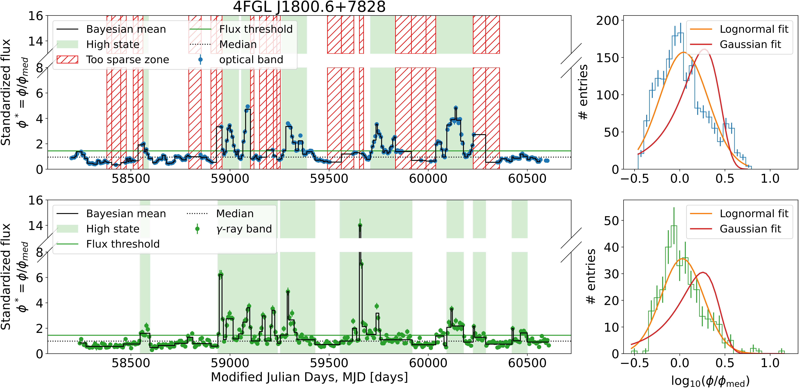
图注：An illustration of the offline outburst-period identification algorithm applied the optical (\(\textit{top})\) and gamma-ray (\(\textit{bottom})\) observations of a blazar over a seven-year timespan. \(\textit{Left:}\) Periods hashed in red contain fewer than two points per month and are not used in the analysis. The black lines show the mean standardised flux obtained during consecutive Bayesian blocks. Series of blocks with rising and then decreasing flux are merged into super-blocks. Super-blocks containing a block flux above the threshold, shown as a horizontal green line set at the 75th percentile of the flux distribution, are identified as outburst periods and shaded in green. \(\textit{Right:}\) Distribution of the logarithm of the flux in each band. \(\textit{Adapted from Refs.\cite{HamoInPrep,MikhnoThisProc}.}\)
对应解读：建议重点查看的图表 4、7；关键图表逐图导读图 4；模型拟合段落中的 flare 定义、历史基线、光学-高能相关和触发残差。
入选理由：这张图直接展示耀变体光学与伽马射线七年光变曲线、Bayesian blocks、通量阈值和 outburst 周期识别，是论文用变率触发 CTAO 的核心方法图。它同时包含时间轴、标准化通量、阈值线、被剔除的低采样区间和光学/高能对照，比单纯示意图更能支撑日报关于 flare 定义、历史基线、多时间尺度行为及光学-γ相关不确定性的解读。
来源与置信度：\(arxiv_source\)；high；\(arxiv_source\) / biteau.tex:figure[5]
Fig04
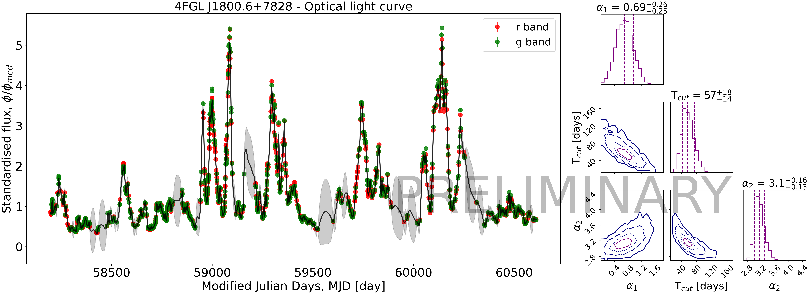
图注：An illustration of the Gaussian process regression applied to ZTF observations of the blazar 4FGL\,J18000.6+7828, a low-frequency peaked BL Lac at $z=0.684$ also known as S5\,1803+78. \(\textit{Left:}\) Standardised time series constructed from g- and r-band observations. The black line and grey band show the best-fit and the associated 68\% credible interval obtained for a broken-power-law power spectral density.\(\cite{2025MNRAS.539.1775L}\) \(\textit{Right:}\) Reconstructed best-fit values of the power-spectral-density parameters: the low- and high-frequency indices ($\alpha_1$ and $\alpha_2$) and the time scale in days corresponding to the frequency break.
对应解读：建议重点查看的图表 4；关键图表逐图导读图 4；模型拟合段落中的 Gaussian process、PSD、可信区间和长期变率建模。
入选理由：该图给出 ZTF g/r 波段耀变体光变的 Gaussian process 回归，包含最佳拟合曲线、68% credible interval 以及 broken-power-law PSD 参数重建，最贴合日报中关于光变曲线模型、结构函数/PSD、历史基线和不确定性传播的讨论。它比普通光变示例更有诊断价值，因为能展示触发排序所依赖的统计建模层。
来源与置信度：\(arxiv_source\)；high；\(arxiv_source\) / biteau.tex:figure[4]
Fig03
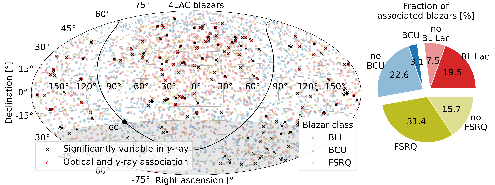
图注：\(\textit{Left:}\) The skymap, in equatorial coordinates, of gamma-ray emitting blazars from the \(\textit{Fermi}-LAT\) 4LAC-DR2 catalogue,\(\cite{2020ApJ...892..105A}\) cross-matched with the ZTF optical survey (data release 23).\(\cite{2020PASP..132c8001D}\) Gamma-ray blazars with a fractional variability on weekly timescales larger than 30\% and significant at the $5\sigma$ level are marked with crosses. Associated optical lightcurves from ZTF with more than 150 measurements and a fractional variability larger than 10\% are shown with red circles. The colour of the markers subdivides the blazars into BL Lacs (BLL), flat-spectrum radio quasars (FSRQs) and blazars of an unknown class (BCU). The grey-shaded area shows the declinations that are inaccessible to ZTF. The black line and circle indicate the Galactic plane and centre (GC), respectively. \(\textit{Right}\): The pie chart of selected variable gamma-ray blazars, with or without an optical counterpart as shown with darker and lighter colours, respectively. Colours display the blazar class. \(\textit{Adapted from Ref.~\cite{HamoInPrep}}.\)
对应解读：建议重点查看的图表 6、7；关键图表逐图导读图 6；详细解读中关于已知 Fermi-LAT blazar、光学对应体和可观测样本筛选的段落。
入选理由：这张图把 Fermi-LAT 4LAC blazar 与 ZTF 光学巡天交叉匹配，标出周尺度 γ 射线强变源、具备足够光学采样和光学变率的源，并按 BLL/FSRQ/BCU 分类显示天区分布。它能支撑日报关于从高能源表到光学触发候选的筛选逻辑、天区覆盖限制和光学-高能关联样本偏差的讨论。
来源与置信度：\(arxiv_source\)；high；\(arxiv_source\) / biteau.tex:figure[3]
Fig02
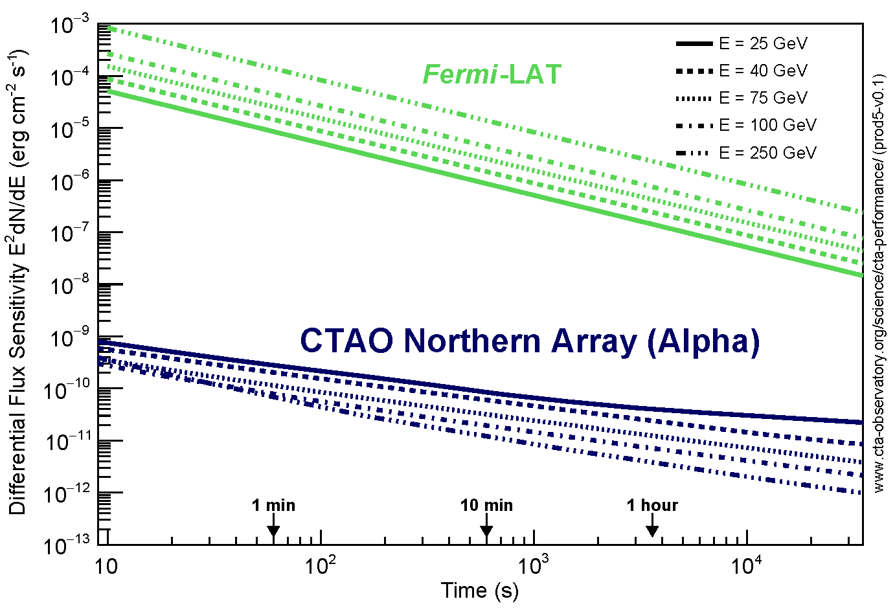
图注：The sensitivity of the \(\textit{Fermi}-LAT\) satellite and of the CTAO-North array (alpha configuration \(\texttt{prod5-v0.1})\) over timescales ranging from 10\,s to 10\,h. Sensitivity is expressed as the minimum energy flux detected at the $5\sigma$ confidence level in energy bins with a width of 0.2\,dex. The central bin energies range from 25\,GeV to 250\,GeV, as labelled in the figure. \(\textit{See Ref.~\cite{ctao_perf}}.\)
对应解读：建议重点查看的图表 1、6；关键图表逐图导读图 1；详细解读中关于 CTAO 与 Fermi-LAT 在短时标高能灵敏度互补的段落。
入选理由：该图展示 Fermi-LAT 与 CTAO-North 在 10 秒到 10 小时时标、25–250 GeV 能段的 5σ 能量通量灵敏度，是判断 CTAO 随访是否现实的关键性能图。虽然它不包含 Rubin 光学警报流，但能量—时间尺度灵敏度直接支撑日报中关于 CTAO 响应短时高能活动和曝光需求的解读。
来源与置信度：\(arxiv_source\)；high；\(arxiv_source\) / biteau.tex:figure[2]
Fig01
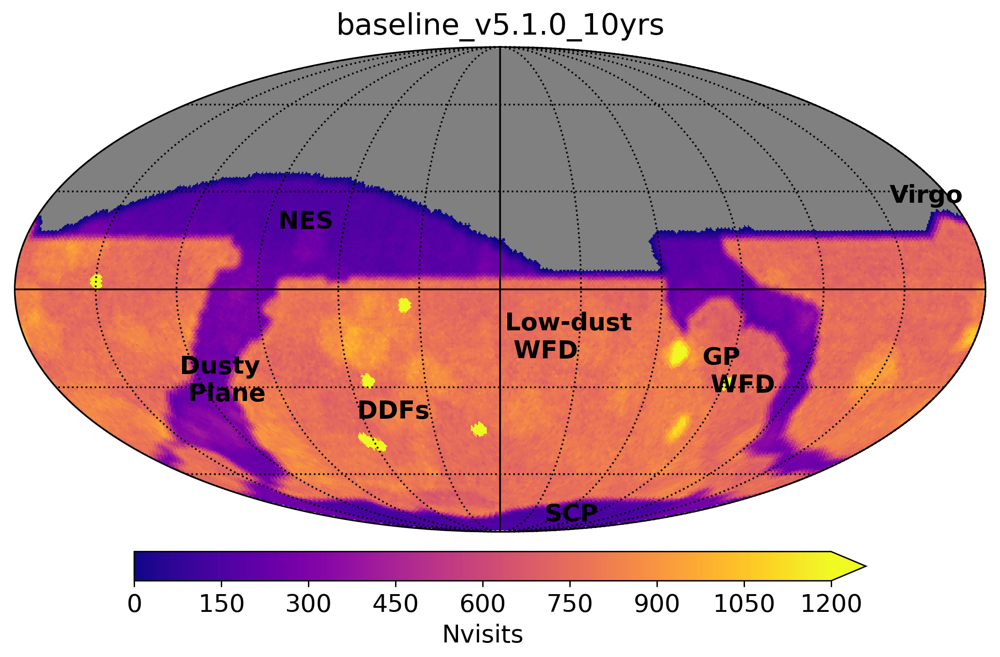
图注：The expected footprint of Rubin's LSST (\(\texttt{v5.1.0})\) in equatorial coordinates. The colour scale shows the number of visits per pixel in each band of Rubin after 10 years of observations. \(\textit{Adapted from Ref.~\cite{2026arXiv260121769P}}.\)
对应解读：建议重点查看的图表 1、6；关键图表逐图导读图 1 和图 6 中关于 Rubin 天区覆盖、cadence/visit 数和联合观测可见性的部分。
入选理由：该图给出 Rubin LSST 十年巡天天区 footprint 和各波段访问次数，可用于判断哪些候选源具备足够光学历史基线和警报采样。它与 CTAO 触发算法的关系不如光变建模和 outburst 识别图直接，但对理解 Rubin 选择函数、天区覆盖不均匀性和后续交叉匹配偏差仍有辅助价值。
来源与置信度：\(arxiv_source\)；high；\(arxiv_source\) / biteau.tex:figure[1]
强相关工作
这篇文章与 LSST alert broker、ZTF 时代的瞬变筛选、Fermi-LAT blazar 监测、MAGIC/H.E.S.S./VERITAS 对光学或高能触发的 ToO 观测经验密切相关。相似工作可检索“LSST Rubin CTAO synergy time-domain blazars”、“Fink broker LSST alerts AGN variability”、“CTA target of opportunity blazar flare”。ZTF 和 Fink/ANTARES/Lasair 等 broker 的经验是 Rubin 运行前最重要的训练场。
与多信使张力相关的背景包括 TXS 0506+056 与 IceCube-170922A 的关联、后续 blazar-neutrino population 统计的争议，以及 GRB 对 IceCube 弥散中微子贡献受限的结果。这些工作提醒我们，单个漂亮关联不能自动推广为源族结论；触发策略必须有可量化选择函数。检索关键词包括“TXS 0506+056 IceCube neutrino blazar association”、“blazar neutrino stacking limits”、“GRB neutrino limits IceCube”、“jetted TDE neutrino candidate”。
相似工作：
- https://arxiv.org/abs/2605.11709
- https://ui.adsabs.harvard.edu/search/q=Rubin%20LSST%20CTAO%20synergy%20time-domain%20blazars
- https://ui.adsabs.harvard.edu/search/q=Fink%20broker%20LSST%20alerts%20AGN%20variability
基础理论 / 方法工作：
- https://www.lsst.org/
- https://www.cta-observatory.org/
- https://fink-broker.org/
- https://ui.adsabs.harvard.edu/search/q=blazar%20variability%20TeV%20gamma-ray%20target%20of%20opportunity
相反观点 / 张力线索：
- https://ui.adsabs.harvard.edu/search/q=TXS%200506%2B056%20IceCube%20neutrino%20blazar%20association
- https://ui.adsabs.harvard.edu/search/q=IceCube%20blazar%20stacking%20limits%20neutrino
- https://ui.adsabs.harvard.edu/search/q=IceCube%20gamma-ray%20bursts%20neutrino%20limits
3. Precessing Black Hole Jets and Galactic Fossils
- 来源：arXiv / astro-ph.HE
- 链接：https://arxiv.org/abs/2605.12448v1
- 作者：Maria J. Rodriguez
- 评分：novelty 7/10，importance 7/10，relevance 10/10，final 9.05/10
- 推荐理由：直接涉及 Galactic Center gamma-ray excess、Fermi/eROSITA bubbles 和 hadronic cosmic rays，提出 Sgr A* 过去喷流统一解释并给出 GCE 强子贡献下限；虽偏模型化且贡献比例不大，但与 GeV 伽马射线和银河中心问题高度相关。
中文题目：进动黑洞喷流与银河系化石：把银河中心 GeV 过量和 Fermi/eROSITA 泡联系起来
做了什么：这篇文章提出一个统一解释银河中心伽马射线过量（GCE）和 Fermi/eROSITA 泡（FEB）的模型：约数百万年前，Sgr A 曾经历一次持续约 7.5 Myr、在约 2.6 Myr 前结束的活动期；一个由倾斜磁通主导吸积盘驱动的、发生 Lense–Thirring 进动的 Blandford–Znajek 喷流，既吹出了 kpc 尺度的双泡结构，也向银河中心区域注入强子宇宙线。作者用 EHT 推断的 Sgr A 自旋轴相对银河旋转轴约 35° 倾角、活动期内约 5 圈方位进动、以及中心分子区和核球两区宇宙线输运模型，估算该喷流遗迹对 GCE 的强子伽马射线贡献。主要结论是：在 EHT 偏好的无量纲自旋 a*=0.9 情况下，这个历史喷流给内 10° 区域 GCE 表面亮度提供约 3–14% 的“不可避免”强子底噪，而不是完全解释 GCE。
为什么重要：GCE 的主流解释长期集中在暗物质湮灭和未分辨毫秒脉冲星两类，但这两类解释往往把 Sgr A* 过去活动留下的 Fermi 泡、eROSITA 泡当作旁支现象处理。本文的重要性在于把银河中心 GeV 信号和大尺度双泡视作同一次黑洞活动的不同尺度遗迹，提醒我们：在讨论暗物质或脉冲星前，必须先量化活动星系核遗迹带来的强子伽马射线前景。
理论 / 观测 / 仪器方法价值：对理论而言，文章把倾斜黑洞自旋、磁通主导吸积、BZ 喷流、Lense–Thirring 进动和银河中心宇宙线输运放进同一个可检验框架。对观测而言，它给出一个可与 Fermi-LAT GCE 形态和表面亮度比较的强子贡献下限。对方法而言，它强调多信使/多尺度一致性检验：喷流能否吹泡、宇宙线能否被喷流柱约束、伽马射线是否会被显著吸收、以及不同自旋参数下贡献如何变化。
为什么应该关注：如果你关心 GCE 是否能作为暗物质信号，这篇文章的结论很直接：哪怕喷流遗迹不能主导 GCE，它也可能贡献非零且空间相关的强子成分，必须进入背景模型。若你研究银河中心反馈、Fermi 泡、Sgr A* 历史活动或 EHT 自旋几何，这篇文章把这些问题连接成一个可以被未来伽马射线、X 射线和射电观测同时约束的场景。
展开详细解读：文章讲解、背景、理论、重点章节、图表与相关工作
文章详细讲解
科学问题：银河中心伽马射线过量是 Fermi-LAT 在 Sgr A 周围约 2–5 GeV 看到的扩展信号，十多年没有共识解释。暗物质湮灭和未分辨毫秒脉冲星是最常被讨论的两类候选，但银河系中心还存在另一条明显线索：Fermi 泡和 eROSITA 泡表明 Sgr A 或银河核区在过去数百万年发生过强烈能量注入。本文要问的是，GCE 和 FEB 是否可以不是两个互不相干的问题，而是同一次 Sgr A* 活动的不同“化石”表现。
作者怎么做：作者构造了一个进动的抛物型 Blandford–Znajek 喷流模型。喷流来自一个相对于黑洞自旋或银河盘面倾斜的磁通主导吸积盘，几何上采用 EHT 对 Sgr A* 自旋方向的一个启发性输入：自旋轴相对银河旋转轴约有 35° 倾角。活动期被设定为约 7.5 Myr，并在约 2.6 Myr 前结束；在这段时间里，Lense–Thirring 进动使喷流方向完成约 5 个方位周期。喷流一方面在大尺度上给 FEB 供能，另一方面注入强子宇宙线；这些质子在中心分子区和核球中传播，并通过 pp 碰撞产生中性 pion，继而衰变为 GeV 伽马射线。
关键结果：模型并不宣称完全解释 GCE，而是估计喷流强子宇宙线对已观测 GCE 表面亮度的最低贡献。对 EHT 偏好的 Sgr A 自旋 a=0.9，作者得到内 10° 区域内强子成分大约占观测 GCE 表面亮度的 3–14%。这意味着，如果 Sgr A* 曾经产生过足以解释 FEB 的喷流，那么与之伴随的强子伽马射线成分很难完全为零。作者还检查了两个内部一致性条件：质子的 Larmor 半径足够小，能够被喷流柱或相关磁结构限制；从银河中心方向传播来的 GeV 伽马射线光深很小，因此吸收不会掩盖信号。
局限和下一步：该场景依赖若干关键输入，包括 Sgr A* 自旋方向和大小、过去活动期的持续时间和结束时间、喷流功率与开角、中心区磁场与气体分布、以及宇宙线扩散系数。GCE 的实际形态分解还受到 Fermi 前景模型、点源模板、气体柱密度和逆康普顿背景的系统误差影响。下一步应把该喷流遗迹模板纳入标准 GCE 模板拟合，与暗物质 NFW 模板、毫秒脉冲星点源群、Fermi 泡边缘、气体相关 π0 模板和 IC 模板同时拟合，并检验其在能谱、纬度剖面和经度不对称性上的可区分性。
背景知识
研究对象有两个。第一个是 GCE：Fermi-LAT 在银河中心内几度到十几度范围内看到的 GeV 伽马射线过量，谱峰大致在几 GeV。它之所以引人注目，是因为类似热遗迹暗物质在银河中心尖峰密度剖面中湮灭，也可以产生近似球对称、GeV 峰值的信号。第二个是 Fermi 泡和 eROSITA 泡：它们是从银河中心向南北延伸的 kpc 级双极结构，分别在伽马射线和 X 射线中显著，通常被解释为过去核区星暴或 Sgr A* 活动的反馈遗迹。
历史上，GCE 讨论常被简化为“暗物质还是毫秒脉冲星”。暗物质方案的吸引力在于形态和能谱都可以被某些 WIMP 参数拟合；脉冲星方案的吸引力在于银河核球中本来就应有老年恒星族和紧致天体，未分辨点源可以在统计上模拟扩展发射。可是，这种二分法容易忽略银河中心是一个复杂环境：Sgr A* 的吸积状态可能在 Myr 时间尺度上变化，中心分子区气体密集，磁场强，宇宙线输运也不同于太阳邻域。
为什么现在值得重新看？一方面，EHT 对 Sgr A* 的成像和几何约束使黑洞自旋方向、吸积流倾角这类过去很难落地的参数开始进入模型；另一方面，eROSITA 对大尺度 X 射线泡的描绘强化了“近期银河核活动”的图像。若 FEB 确实需要一次过去的能量注入，那么同一次事件是否也留下 GeV 强子辐射，就变成一个不能回避的背景问题。
该领域常见误区之一是把 GCE 视作单一成分问题：只要某个模板拟合好，就认为其他成分不存在。实际情况更可能是多成分叠加，包括气体相关 π0 衰变、逆康普顿、未分辨点源、泡结构边缘、活动遗迹宇宙线和可能的新物理。另一个误区是把 Fermi 泡看成只影响高纬伽马射线的大尺度结构，而忽略其根部和喷流注入区可能对内几度 GCE 形态产生影响。
基础理论 / 方法脉络
核心物理图像是：旋转黑洞加上有序磁场可以通过 Blandford–Znajek 机制抽取自旋能，产生相对论性喷流。若吸积盘是磁通主导状态，磁场在黑洞附近积累到足以调节吸积流，喷流功率可达到足以影响银河核区气体和热等离子体的水平。若黑洞自旋轴、吸积盘角动量和银河盘角动量不完全对齐，喷流方向可能随时间进动，从而在空间上扫过一定锥面，而非沿固定轴单次注入。
Lense–Thirring 进动来自旋转黑洞的惯性系拖曳。倾斜盘中不同半径的气体受到不同进动频率，真实系统还会涉及盘内粘滞、磁应力和 Bardeen–Petterson 对齐等过程。本文采用的是面向可观测后果的进动几何：在活动期内喷流约完成数个方位周期，形成一个随时间改变注入方向的宇宙线源。这种几何会影响 FEB 的双极形态，也会影响强子宇宙线在内银河的角分布。
强子伽马射线的基本过程是宇宙线质子与星际介质质子碰撞，产生 π0，随后 π0 衰变为两个伽马光子。可观测亮度取决于宇宙线质子密度、靶气体密度、pp 截面、扩散和逃逸时间。中心分子区气体密度高，磁场和湍流也强，因此不能简单使用太阳邻域的宇宙线分布外推。本文采用两区输运：中心分子区和核球具有不同环境参数，使喷流注入的质子在内区和外区产生不同表面亮度。
观测和数据分析上的关键是模板分解。Fermi-LAT 看到的是沿视线积分后的光子计数图，需要同时建模仪器响应、点扩散函数、能量分辨率、弥散前景和点源。一个喷流遗迹模板若只贡献 3–14%，仍可能在模板相关性很强的区域改变暗物质或脉冲星模板的归一化，因此其重要性不在于“解释全部信号”，而在于改变背景预算。
公式与推导
可以从黑洞喷流功率、进动几何、宇宙线输运和强子辐射四步连接到观测表面亮度。第一步是 Blandford–Znajek 功率的量级关系：
其中 \(P_{\rm BZ}\) 是喷流功率，\(\kappa\) 是与磁场几何有关的无量纲系数，\(\Phi_{\rm BH}\) 是穿过黑洞视界的磁通量，\(\Omega_{\rm H}\) 是黑洞视界角速度，\(c\) 是光速。对 Kerr 黑洞，\(\Omega_{\rm H}\) 随无量纲自旋 \(a_*\) 增大而增大，因此高自旋通常意味着更强的可用喷流功率。
第二步是进动频率。对半径 \(r\) 处的倾斜环，Lense–Thirring 进动可写成量级式：
其中 \(G\) 是引力常数，\(J_{\rm BH}\) 是黑洞角动量，\(r\) 是盘环半径。活动期 \(t_{\rm act}\) 内的总进动圈数近似为
本文采用的物理图像是 \(t_{\rm act}\sim 7.5\,\mathrm{Myr}\) 内完成约 5 圈方位进动，从而让喷流注入方向在核区扫掠而非固定。
第三步是宇宙线质子输运。若把注入源写成 \(Q_p(E,\mathbf r,t)\)，质子数密度 \(n_p(E,\mathbf r,t)\) 满足扩散-损失方程：
其中 \(D\) 是扩散系数，\(t_{pp}\) 是 pp 碰撞损失时间，\(t_{\rm esc}\) 是逃逸时间。两区模型的核心就是 \(D\)、气体密度和逃逸条件在中心分子区与核球中不同。
第四步是伽马射线发射率。强子过程的体发射率可近似写成：
其中 \(n_{\rm gas}\) 是靶气体密度，\(d\sigma_{pp\rightarrow\gamma}/dE_\gamma\) 是产生伽马射线的微分截面。观测到的某方向 \(\psi\) 上的强度为沿视线积分：
本文指出银河中心方向 GeV 伽马射线光深 \(\tau_{\gamma\gamma}\) 很小，所以指数吸收项近似为 1。
还需检查宇宙线是否能被喷流磁结构约束。质子 Larmor 半径为
其中 \(p\) 是动量，\(Z e\) 是电荷，\(B\) 是磁场强度。若 \(r_L\) 小于喷流柱宽度或相关磁相干尺度，则质子在注入阶段可以近似随喷流柱传播；否则源项会更弥散，形态预测也会被削弱。
模型拟合 / 应用方法
这类工作的拟合核心是把喷流遗迹强子模板加入 GCE 的伽马射线计数模型。实际观测量不是直接的物理亮度，而是每个能段、每个像素中的 photon counts。通常模型可写成若干模板的线性或半线性组合：气体相关 π0/bremsstrahlung 模板、逆康普顿模板、各向同性背景、Fermi 泡模板、点源模板、可能的暗物质 NFW 模板、核球/盒状核球毫秒脉冲星模板，以及本文关心的进动喷流强子模板。需要通过泊松似然或近似高斯似然估计各模板归一化和谱参数。
参数估计方面，喷流模型的自由度包括黑洞自旋 \(a_*\)、喷流功率、活动持续时间和结束时间、进动锥角和相位、宇宙线注入谱指数、最大能量、强子能量分数、扩散系数、气体分布和磁场。本文摘要强调自旋依赖贡献，并给出在 \(a_*=0.9\) 时约 3–14% 的表面亮度范围；这类范围通常应理解为在若干合理输运和几何假设下得到的模型带，而非单一精确测量。
主要退化关系有三类。第一，喷流强子模板与常规气体相关 π0 模板相关，因为二者都依赖气体柱密度；若气体模型误差较大，强子遗迹贡献可能被吸收到常规弥散前景中。第二，喷流根部或进动扫掠形成的近球形分量可能与暗物质 NFW 模板或核球恒星模板相关，影响暗物质截面或 MSP 数量的推断。第三，宇宙线扩散系数与注入时间存在退化：更早注入加慢扩散、较晚注入加强扩散，可能产生相似角尺度。
残差应重点看能谱和形态是否同时改善。若加入喷流模板只在某个能段降低残差，但引入经纬度上不合理的不对称，说明模型可能过拟合。若在 FEB 根部、内 10° 纬度剖面、以及 2–5 GeV 能段同时减少系统性残差，则更支持活动遗迹成分。实际应用上，该模板最适合作为 GCE 解释的“强子前景下限”进入联合拟合，而不是单独与暗物质或脉冲星做二选一比较。
重点章节 / 结果段落怎么读
-
引言和科学动机：应先看作者如何界定 GCE 与 FEB 的联系。关键不是“用喷流替代暗物质或脉冲星”，而是提出一个过去 Sgr A* 活动不可忽略的强子底噪。读者要注意作者对活动时间、泡年龄和 GCE 谱峰的匹配逻辑。
-
喷流几何与黑洞参数：重点读倾角、自旋、进动周期和喷流轨迹的设定。这里的核心输入是 EHT 启发的约 35° 自旋倾角和 \(a_*\) 依赖的 BZ 功率。要分清哪些参数来自观测约束，哪些是为了让模型与 FEB 尺度一致而选取的合理值。
-
宇宙线注入和两区输运模型：这是决定 GCE 贡献的关键方法段。应检查中心分子区和核球的扩散系数、气体密度、边界条件、注入谱和能量预算。读者要特别关注作者是否区分了喷流柱内传播、离开喷流后的弥散传播，以及 pp 损失时间。
-
与 GCE 观测比较：主结果应出现在表面亮度剖面、能谱或内 10° 积分贡献中。应看模型如何与当前 GCE 数据或文献模板结果比较，以及 3–14% 这个范围在不同角距离、不同能段和不同自旋下如何变化。
-
一致性检验和讨论：重点看 Larmor 半径约束、伽马射线光深、能量预算是否能同时满足。讨论部分还应说明该成分如何影响暗物质和 MSP 解释，以及未来 Fermi-LAT 重分析、CTA、AMEGO/e-ASTROGAM 类 MeV-GeV 任务或 X 射线泡观测能否检验。
建议重点查看的图表
-
喷流进动几何图：应看 Sgr A* 自旋轴、银河旋转轴、35° 倾角、进动锥和喷流扫掠区域之间的关系。关键是喷流是否自然覆盖 FEB 根部和 GCE 内区。
-
活动历史和进动相位随时间图：应检查 7.5 Myr 活动期、2.6 Myr 前结束、约 5 圈进动是否在图中清楚标出。注意不同相位是否会导致明显南北或经度不对称。
-
宇宙线密度或注入源项空间分布图：应看中心分子区和核球中质子密度如何扩散，喷流柱是否过窄或过宽，以及是否与高气体密度区域重叠。
-
预测伽马射线表面亮度与 GCE 数据比较图：应重点看内 10° 不同角半径的模型曲线、观测点和误差带。3–14% 的贡献是否在所有半径都成立，还是集中在某些角区。
-
能谱图：应检查强子 π0 谱是否自然覆盖 2–5 GeV，还是需要特定质子谱指数和截止能。还要看与 GCE 总谱、泡谱和常规弥散背景的差异。
-
参数敏感性图：若有自旋 \(a_*\)、扩散系数、喷流功率或气体密度扫描，应看贡献比例对这些参数的斜率。尤其关注 \(a_*=0.9\) 是否处在模型带中心还是边缘。
-
一致性检验表或诊断图：应看 Larmor 半径与喷流尺度比较、\(\gamma\gamma\) 光深、总能量预算、pp 损失时间和泡能量需求是否同时满足。
关键图表逐图导读
图 1：通常应是系统几何示意图或三维投影。横纵坐标可能是银河坐标 \(l,b\) 或以银河中心为原点的空间坐标，数据/阴影显示 Fermi/eROSITA 泡轮廓，线条显示进动喷流轨迹。读图时要看喷流锥面是否与泡的双极轴、根部宽度和内 10° 区域有合理重叠。陷阱是示意图容易显得“对得上”，但真正的约束来自后续表面亮度和能谱。
图 2：可能展示喷流方向、进动相位或活动历史随时间变化。横轴应是 lookback time 或活动期时间，纵轴为方位角、极角或喷流功率。关键是 7.5 Myr 活动期和约 5 个进动周期是否对应稳定、连续的注入，而非人为拼接。若喷流功率随时间恒定，要注意这会低估或忽略真实吸积爆发的间歇性。
图 3：可能是宇宙线质子空间分布或两区输运结果。坐标可能为银河经纬度、柱密度图或径向距离，色标为 \(n_p\)、能量密度或注入率。应看质子分布是否过度集中在中心分子区，还是扩散到核球尺度；也要看喷流扫掠带是否留下可观的不对称。读图陷阱是色标动态范围大，低亮度扩展成分可能视觉上不明显但对积分通量重要。
图 4：应是模型预测的伽马射线表面亮度剖面与 GCE 观测比较。横轴可能是角距离 \(\theta\) 或纬度 \(|b|\)，纵轴为 \(E^2 dN/dE\)、积分强度或相对 GCE 百分比。关键看强子喷流成分占 GCE 的比例是否随半径从 3% 到 14% 变化，以及误差带是否覆盖观测系统误差。陷阱是若只画比例而不画绝对亮度，可能掩盖不同 GCE 文献提取值之间的差异。
图 5：若有能谱图，横轴为光子能量，纵轴为通量或能量通量。强子 π0 衰变模型线应与 GCE 几 GeV峰值进行比较。应检查模型是否只匹配峰附近，而在低能或高能端产生过量；这会决定它能否在全能段模板拟合中被接受。
图 6：参数扫描或稳健性检验图。横轴可能是 \(a_*\)、扩散系数 \(D\)、喷流功率、活动年龄或气体密度归一化，纵轴为 GCE 贡献比例或总伽马光度。重点看结论是否强依赖单一参数。若 \(a_*=0.9\) 下有 3–14%，但低自旋迅速降到可忽略，高自旋又超过观测约束，那么自旋测量的不确定性就是主导系统误差。
论文原图 / 可嵌入图片
Fig04
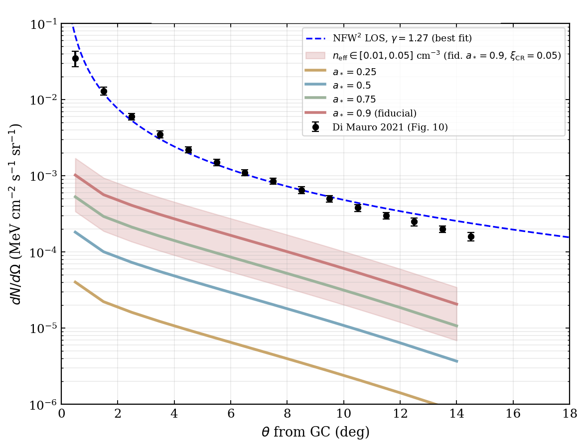
图注：Resulting hadronic surface brightness profile in the $1$--$10\,\GeV$ band from the precessing BZ jet of \(\SgrA{}\) (four spin values; red band: $n_{\rm eff} \in [0.01, 0.05]\,\mathrm{cm^{-3}}$ at $\astar = 0.9$), versus the Di Mauro 2021 Fig.~8 data points (black) and the best-fit NFW$^{2}$ line-of-sight integral with $\gamma = 1.27$ (dashed blue). At $\astar = 0.9$, the hadronic floor accounts for $\sim 6\%$ of the observed surface brightness at $\theta = 0.5^{\circ}$, rising monotonically to $\sim 14\%$ near $\theta = 9.5^{\circ}$ and falling to $\sim 10\%$ at $\theta = 14^{\circ}$. The shortfall at small $\theta$ is morphological, not energetic: the precessing-jet geometry and bulge diffusion smear the CR injection over $\sim 12^{\circ}$, producing a profile too flat to match the cuspy NFW$^{2}$ shape that fits the data.
对应解读：对应“建议重点查看的图表”第4项和“关键图表逐图导读”图4：预测伽马射线表面亮度与GCE数据比较。
入选理由：这是最直接支撑日报核心结论的图：给出1–10 GeV表面亮度剖面、不同自旋模型线、a*=0.9的气体密度不确定性带，并与Di Mauro 2021观测点及NFW^2剖面比较。图中明确展示内10°贡献比例从约6%升至约14%，以及模型形态比NFW^2更平坦这一关键限制，比示意图更能检验3–14%强子下限是否成立。
来源与置信度：\(arxiv_source\)；high；\(arxiv_source\) / GCEBZArXiv.tex:figure[4]
Fig03
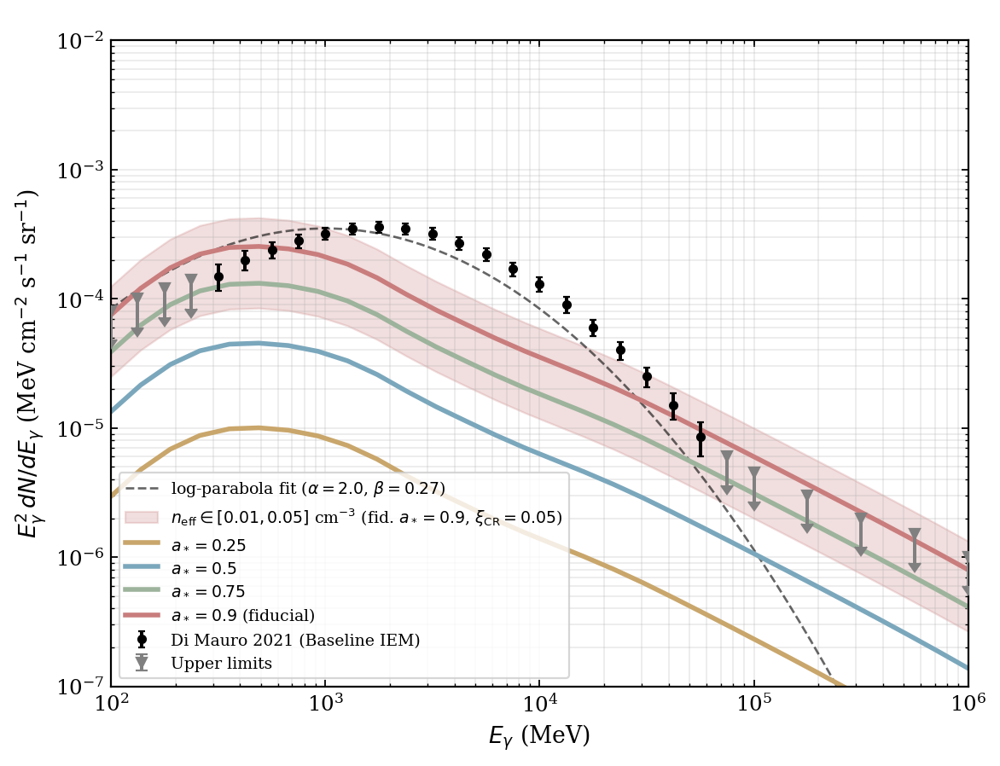
图注：Anticipated hadronic GCE spectrum integrated over $\theta < 10^{\circ}$ from the precessing BZ jet of \(\SgrA{},\) shown for four black-hole spin values $\astar \in \{0.25, 0.5, 0.75, 0.9\}$ (red band at fiducial $\astar = 0.9$: $n_{\rm eff} \in [0.01, 0.05]\,\mathrm{ cm^{-3}}$), versus the Di Mauro 2021 Baseline-IEM detections~\(\cite{DiMauro2021}\) (black points with $1\sigma$ errors; downward arrows: $95\%$ upper limits at $E_{\gamma} < 0.3\,\GeV$ and $E_{\gamma} > 75\,\GeV$). The dashed grey curve is the published log-parabola fit ($\alpha = 2.0$, $\beta = 0.27$)~\(\cite{DiMauro2021}.\) The model peaks near $E_{\gamma} \simeq 0.5\, \GeV$; at the EHT-favoured $\astar = 0.9$ the ROI-averaged amplitude saturates the data at sub-GeV energies and contributes $\sim 25$--$45\%$ near the GCE peak ($E_{\gamma} \simeq 1.8\,\GeV$), falling to $\sim 25\%$ above $5\,\GeV$. At lower spin the contribution drops sharply, reaching the percent level at $\astar \lesssim 0.5$. A hadronic tail at $E_{\gamma} \gtrsim 100\,\GeV$ remains testable with CTA and HAWC.
对应解读：对应“建议重点查看的图表”第5项和第6项，以及“关键图表逐图导读”图5/图6：能谱图与自旋参数敏感性。
入选理由：该图同时展示强子π0相关伽马射线谱、GCE观测点、log-parabola拟合、a=0.25–0.9的自旋依赖模型线和a=0.9的不确定性带。它直接检验模型是否覆盖GeV峰、是否在低能或高能端过量，并显示低自旋下贡献迅速下降，是判断结论是否强依赖a*=0.9的关键图。
来源与置信度：\(arxiv_source\)；high；\(arxiv_source\) / GCEBZArXiv.tex:figure[3]
Fig01
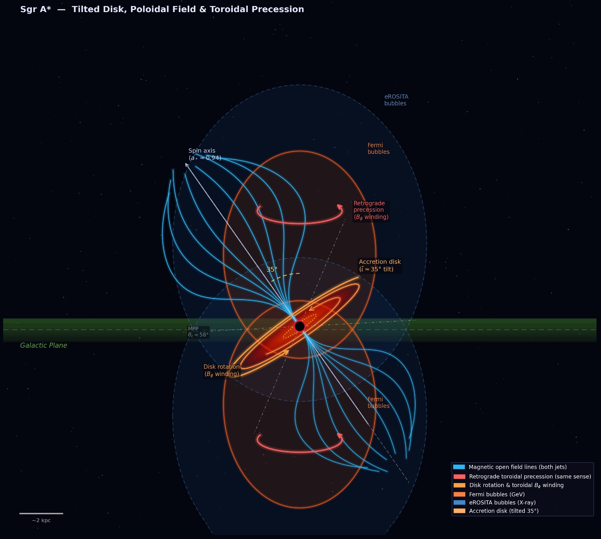
图注：Schematic of the proposed model. The accretion disc (orange ellipse), tilted by $i_{\tilt} \simeq 35^{\circ}$ from the Galactic plane (green band), launches a parabolic Blandford--Znajek jet within a critical cone of half-angle $\theta_{c} \simeq 20^{\circ}$ from the spin axis (dashed grey lines)~\(\cite{Rueda2023}.\) Open poloidal field lines (cyan) thread the polar caps. Lense--Thirring precession (red arrows) sweeps the spin axis azimuthally with period $T_{\rm prec} \simeq 1.6\,\Myr$ over the active phase $\tact \simeq 7.5\,\Myr$, averaging the cosmic-ray injection into a quasi-spherical pattern. The Fermi (orange-red lobes) and eROSITA (blue dashed ellipses) bubbles are interpreted as fossil evidence of this outburst~\(\cite{Su2010Fermi,Predehl2020,Yang2022}.\) The dashed blue line indicates the spin axis ($\astar \simeq 0.9$); the gold arc marks the $35^{\circ}$ tilt angle.
对应解读：对应“建议重点查看的图表”第1项和第2项，以及“关键图表逐图导读”图1：喷流进动几何和活动历史示意。
入选理由：该图集中标出35°倾角、20°临界锥、Sgr A*自旋轴、银河平面、Lense–Thirring进动、1.6 Myr进动周期、7.5 Myr活动期和Fermi/eROSITA泡轮廓，是理解统一解释GCE与FEB的几何前提最重要的示意图。虽然约束力不如定量剖面和能谱，但非常适合支撑日报对进动喷流覆盖泡根部和内区的解读。
来源与置信度：\(arxiv_source\)；high；\(arxiv_source\) / GCEBZArXiv.tex:figure[1]
Fig02
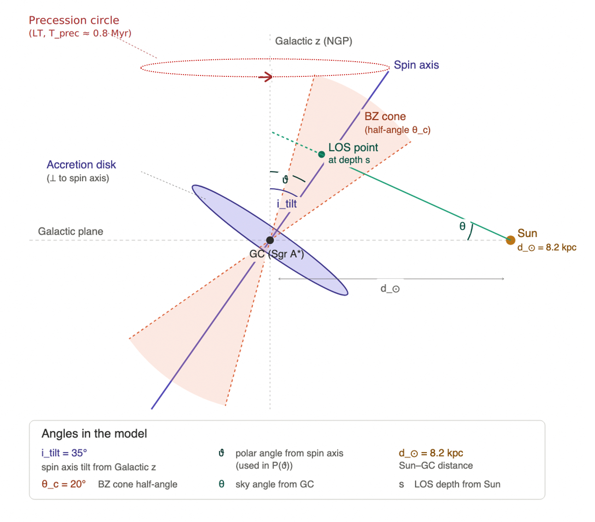
图注：Horizon-scale geometry of the precessing BZ jet from \(\SgrA{}.\) The spin axis (purple, dashed) is tilted by $i_{\tilt} \simeq 35^{\circ}$ from the Galactic $\hat{z}$-axis (vertical, NGP), corresponding to the EHT-inferred line-of-sight inclination $i \simeq 150^{\circ}$ ~\(\cite{EHT2024VIII}.\) The accretion disc (purple ellipse) lies perpendicular to the spin axis; the BZ critical cone (orange wedge) is launched with half-angle $\theta_{c} \simeq 20^{\circ}$ around the instantaneous spin axis. The Lense--Thirring precession circle (red dashed ellipse) traces the spin-axis tip around the Galactic $\hat{z}$-axis with period $T_{\mathrm{prec}} \simeq 1.6\,\Myr$. The polar angle $\vartheta$ (from Galactic $\hat{z}$) and sky angle $\theta$ (from the Sun--GC line of sight) entering Eq.~(\(\ref{eq:Pplus})\) and the surface-brightness integral of Sec.~\(\ref{sec:derivation}\) are indicated.
对应解读：对应“建议重点查看的图表”第1项、第2项，以及“模型拟合”中关于表面亮度积分几何的说明。
入选理由：该图比Fig01更聚焦近黑洞尺度几何，标出EHT倾角、BZ临界锥、进动圆、极角和视线角等进入表面亮度积分的变量。它有助于解释模型如何从自旋/进动几何投影到天空亮度，但与FEB大尺度轮廓和观测比较的联系弱于Fig01与Fig04，因此排序靠后。
来源与置信度：\(arxiv_source\)；high；\(arxiv_source\) / GCEBZArXiv.tex:figure[2]
Fig05
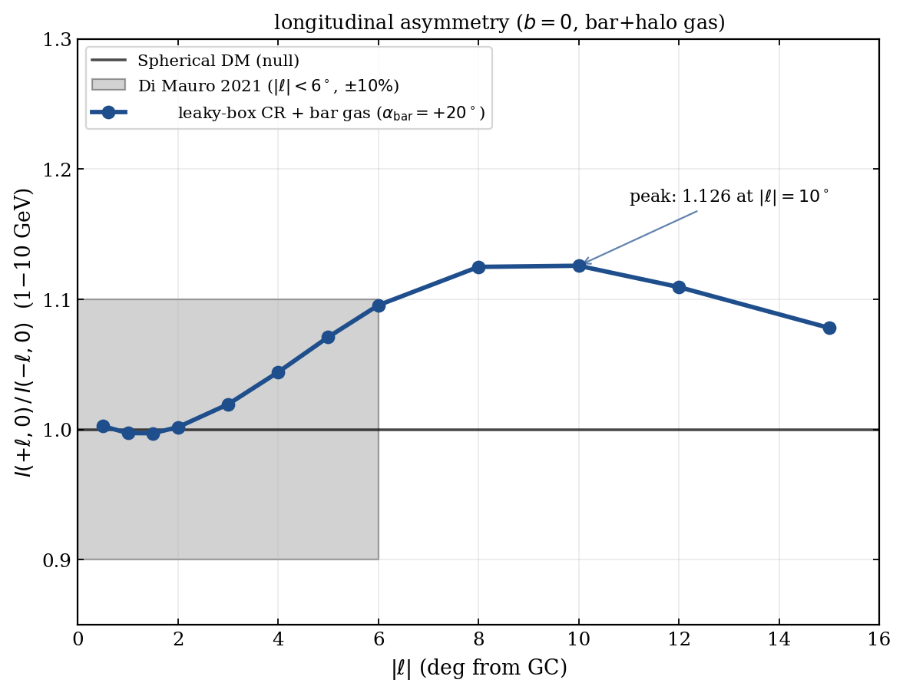
图注：Longitudinal asymmetry of the GCE in the $1$--$10\,\GeV$ band at zero Galactic latitude, $R(\ell) = I(+\ell, 0)/I(-\ell, 0)$, as a function of absolute Galactic longitude $|\ell|$. The blue curve is the physical expectation including the X-ray-measured halo $n_{0}^{\rm halo} = 0.03\,\mathrm{cm^{-3}}$~\(\cite{MillerBregman2016}\) together with the triaxial bar of Eq.~(\(\ref{eq:gas_bar_plus_halo}).\) The asymmetry peaks at $R \simeq 1.13$ near $|\ell| \approx 10^{\circ}$ and decreases at larger $|\ell|$ as the symmetric halo dominates the LOS integral. The horizontal black line is the spherical-DM null hypothesis $R = 1$, common to all rotationally-invariant halo profiles. The grey box marks the region accessible to the Di~Mauro 2021 quadrant analysis~\(\cite{DiMauro2021},\) which finds the GCE consistent with spherical morphology at the $\lesssim 10\%$ level for $|\ell| < 6^{\circ}$; the physical curve remains comfortably inside this constraint across the full range $|\ell| 6^{\circ}$.
对应解读：对应“建议重点查看的图表”第3项和“模型拟合”中关于经纬度不对称性、残差与模板可区分性的讨论。
入选理由：该图展示1–10 GeV零纬度经度不对称比R(l)，并与球对称暗物质假设R=1及Di Mauro象限分析约束比较。它不是日报最核心的亮度或能谱验证图，但能检验进动喷流/棒状气体模型是否引入过大的东西向不对称，对判断模板是否会被观测形态排除有独立价值。
来源与置信度：\(arxiv_source\)；high；\(arxiv_source\) / GCEBZArXiv.tex:figure[5]
强相关工作
这篇工作与 GCE 暗物质解释、毫秒脉冲星解释和银河中心活动反馈三条文献线相交。暗物质方向通常检索关键词包括 “Galactic Center Excess dark matter NFW Fermi-LAT”, “WIMP annihilation Galactic center GeV excess”；毫秒脉冲星方向可检索 “unresolved millisecond pulsars Galactic Center Excess”, “non-Poissonian template fitting GCE”。本文的不同之处在于，它不把 GCE 全部归因于某一类稳定源，而是引入一次过去 Sgr A* 活动留下的非稳态强子成分。
与 Fermi 泡/eROSITA 泡研究相比，本文把泡的动力学来源和内区 GeV 辐射放在同一能量预算中。相关关键词包括 “Fermi bubbles hadronic model”, “eROSITA bubbles Galactic center outburst”, “Sgr A star past activity jet precession”。这类模型长期存在星暴驱动和 AGN 喷流驱动的竞争；本文偏向后者，并进一步强调喷流进动和黑洞自旋倾角。
潜在张力来自几个方面：非泊松模板拟合曾给出 GCE 中存在未分辨点源群的证据，但不同前景模型下显著性会变化；暗物质模板也常与核球恒星模板、气体模板发生相关。若本文喷流模板加入拟合，可能改变这些证据的强弱。因此应把它看成一个需要进入联合模板分析的新物理前景，而非已经排除或证实暗物质/MSP 的结果。
相似工作：
- https://arxiv.org/abs/2605.12448
- https://arxiv.org/abs/1407.7905
- https://arxiv.org/abs/1407.5583
- https://arxiv.org/abs/2009.00006
基础理论 / 方法工作：
- https://ui.adsabs.harvard.edu/abs/1977MNRAS.179..433B/abstract
- https://ui.adsabs.harvard.edu/abs/1918PhyZ...19..156L/abstract
- https://arxiv.org/abs/1005.5480
- https://arxiv.org/abs/2004.07187
相反观点 / 张力线索：
- https://arxiv.org/abs/1506.05124
- https://arxiv.org/abs/1512.03433
- https://arxiv.org/abs/1705.00009
- https://arxiv.org/abs/1906.11845
4. High-energy Multi-messenger Emission from Galaxy Clusters in the Local Universe
- 来源：arXiv / astro-ph.HE
- 链接：https://arxiv.org/abs/2605.11858v1
- 作者：Saqib Hussain, Gabrijela Zaharijas, Klaus Dolag
- 评分：novelty 7/10，importance 7/10，relevance 10/10，final 9.05/10
- 推荐理由：系统计算 Virgo、Perseus、Coma 及本地宇宙星系团的弥散伽马射线和中微子贡献，并与 LHAASO、MAGIC、Fermi-LAT、IceCube 限制比较；与高能多信使背景和强子发射模型高度相关。
中文题目：本地宇宙星系团的高能多信使辐射
做了什么：这篇论文用磁流体力学星系团模拟加蒙特卡罗宇宙线传播，估算了 Virgo、Perseus、Coma 三个近邻星系团以及 500 Mpc 内本地宇宙星系团总体产生的弥散 γ 射线和中微子通量。作者假设宇宙线注入强度随团内气体密度标度，因为高密度区通常伴随湍流、激波和潜在的粒子加速。结果是：单个星系团的 γ 射线通量低于 LHAASO 现有上限；Perseus 中心源 NGC 1275 的 MAGIC 观测显著高于模型预测，说明那更可能是中心 AGN 源而非团弥散 ICM 成分；本地星系团累计 γ 射线和中微子通量也低于 Fermi-LAT 弥散 γ 背景和 IceCube 对未解析星系团中微子的现有限制。因此，按这套相对保守且空间解析的 ICM 宇宙线模型，近邻星系团不太可能独自解释已观测的弥散高能 γ 射线或中微子背景。
为什么重要：星系团一直是解释 IceCube 弥散中微子和高能 γ 射线背景的候选源类：它们质量大、含有热等离子体、磁场、湍流、激波、AGN 和星暴星系，理论上能长期俘获宇宙线并通过 pp 碰撞产生 π 介子衰变辐射。这篇工作的意义在于，它不是只用一维 beta 模型或简单质量标度，而是把 MHD 模拟给出的气体、温度、磁场结构和蒙特卡罗传播结合起来，直接估算具体近邻团和本地宇宙的贡献。结论偏负面但很关键：若采用随气体密度注入的 ICM 宇宙线模型，星系团总体贡献明显不足以解释现有弥散背景。
理论 / 观测 / 仪器方法价值：对理论而言，这篇文章给出了一个把星系团内部空间结构、宇宙线扩散/传播和次级 γ 射线—中微子产生联系起来的可操作框架，可用于检验不同宇宙线注入模型。对观测而言，它把 Virgo、Perseus、Coma 的预测与 LHAASO、MAGIC、Fermi-LAT 和 IceCube 约束放在同一图景中，帮助区分中心 AGN、成员星系和真正 ICM 弥散辐射。对方法而言，它强调磁场与气体分布会影响宇宙线驻留时间和辐射形态，不能只看总质量或总气体量。
为什么应该关注：如果你关心 IceCube 中微子源、Fermi 弥散 γ 背景或 CTA/LHAASO 对星系团的探测前景，这篇论文提供了一个现实基线：在相当自然的宇宙线注入假设下，近邻星系团信号可能比乐观模型弱很多。它也提醒读者，Perseus 这类亮源中的高能 γ 射线未必代表团介质宇宙线，而可能主要来自 NGC 1275 等中心活动星系核。未来若 CTA、LHAASO 或 IceCube-Gen2 发现星系团信号，就可以用这种模型框架反推宇宙线注入、扩散和磁场条件是否需要大幅偏离常规假设。
展开详细解读：文章讲解、背景、理论、重点章节、图表与相关工作
文章详细讲解
科学问题：论文要回答的是，近邻星系团是否能为宇宙中尚未确定来源的弥散 γ 射线和高能中微子提供显著贡献。星系团含有大量热气体和磁场，宇宙线质子若在团内被激波、湍流、AGN 或成员星系注入并长时间束缚，就会与团内介质发生 pp 碰撞，产生中性π介子衰变 γ 射线和带电π介子衰变中微子。这个过程的吸引力在于 γ 射线和中微子有共同的强子起源；难点在于宇宙线源项、扩散、磁场结构和气体分布都不确定。
作者怎么做：作者选取 Virgo、Perseus、Coma 三个代表性近邻星系团，使用 MHD 模拟给出的团内温度、气体密度和磁场分布作为物理背景，再用蒙特卡罗方法追踪宇宙线在 ICM 中的传播及其产生的次级粒子。核心假设是宇宙线注入率随气体密度标度，即高密度区域也是更容易出现强湍流、激波和有效加速的区域。这比把宇宙线均匀撒在整个团中更物理，但也不是唯一选择；它相当于给出了一个密度关联的、空间解析的基准模型。随后作者把单个团的预测与 LHAASO、MAGIC 等观测约束比较，并进一步估算 500 Mpc 内质量大于约 \(5\times10^{13}M_\odot\) 的星系团累计 γ 射线和中微子通量。
关键结果：模型给出的 Virgo、Perseus、Coma 弥散 γ 射线通量均低于 LHAASO 目前上限，因此没有与现有非探测发生冲突。Perseus 中心源 NGC 1275 的 MAGIC γ 射线观测明显高于该模型预测，这说明 MAGIC 看到的高通量不能简单解释为整个 ICM 的强子弥散辐射，而更可能受中心 AGN 主导。对本地宇宙所有较大质量星系团做累计后，作者发现其 γ 射线通量仍显著低于 Fermi-LAT 报告的弥散 γ 射线背景；中微子预测也与 IceCube 对未解析星系团贡献的上限一致，未要求星系团成为主要中微子源。
局限和下一步：最重要的不确定性是宇宙线注入的归一化和空间分布。密度标度是合理近似，但真实源可能与 AGN 喷流、星暴成员星系、并合激波或吸积激波更紧密相关；这些源项会改变辐射形态和能谱。宇宙线扩散系数、磁场相干长度、湍流谱、最大能量、谱指数和红移演化也都会影响最终通量。下一步应把不同源类分量分开建模，尤其是中心 AGN、成员星系和 ICM 弥散强子辐射的分离；同时需要面向 CTA、LHAASO、HAWC、IceCube-Gen2/KM3NeT 的联合似然预测，而不仅是总通量比较。
背景知识
星系团是宇宙中最大尺度的近似引力束缚结构，含有暗物质晕、数千万到上亿 K 的热团内介质、星系群体、AGN、磁场和湍流。X 射线观测显示 ICM 具有丰富的密度、温度和金属丰度结构；射电观测中的 radio halo、radio relic 和 mini-halo 说明非热电子与磁场广泛存在。既然电子可被加速，长期以来自然会问：质子宇宙线是否也大量储存在团内，并通过强子过程产生可观 γ 射线和中微子？
历史上，星系团作为 γ 射线源的预测常常相当乐观，因为高能质子在微高斯量级磁场中可被束缚接近宇宙学时间，累积能量密度可能不低。但 Fermi-LAT 对多个近邻团的搜索长期未给出稳健弥散探测，只给出了上限；Cherenkov 望远镜对 Perseus 等目标的观测则经常被中心 AGN 或成员星系污染。中微子方面，IceCube 已经探测到弥散天体中微子，但其源类组成仍未完全确定，星系团贡献受到堆叠分析和未解析源背景的限制。
为什么现在值得重新看：一方面，LHAASO、HAWC、MAGIC、VERITAS、H.E.S.S.、Fermi-LAT 和未来 CTA 对 TeV–PeV γ 射线的约束越来越强；另一方面，IceCube 积累了更长时间的中微子数据，IceCube-Gen2 和 KM3NeT 会改进灵敏度与角分辨率。与此同时，宇宙学 MHD 模拟已经能给出较现实的星系团气体、温度和磁场分布，使得人们可以从“球对称、均匀、解析标度”的估算进入更空间解析的预测。
该领域常见误区之一是把星系团中的所有高能信号都归因于 ICM 弥散强子过程。实际上，Perseus 的 NGC 1275、M87、星暴成员星系、窄线区活动甚至背景源都可能主导点源或准点源 γ 射线。另一个误区是只用总质量判断高能亮度；pp 辐射还强烈依赖气体密度平方或宇宙线—气体空间重叠、宇宙线驻留时间以及谱形。第三个误区是认为 γ 射线非探测直接排除所有星系团中微子模型；若能谱、内部吸收、源分布或红移演化不同，γ 与中微子约束的映射并不总是简单一一对应。
基础理论 / 方法脉络
核心物理图像是强子宇宙线质子在 ICM 中传播，并与热气体中的质子发生非弹性 pp 碰撞。碰撞产生 π0、π+、π− 等介子；π0 很快衰变为两颗 γ 光子，带电π则通过 μ 子链产生电子/正电子和中微子。因此 γ 射线和中微子是同一强子过程的不同信使，二者的相对强度主要由 pp 碰撞产额和宇宙线谱决定。
关键量包括气体数密度 \(n_{\rm gas}(\mathbf r)\)、宇宙线质子相空间密度或微分密度 \(N_p(E,\mathbf r)\)、磁场 \(B(\mathbf r)\)、扩散系数 \(D(E,\mathbf r)\)、注入谱 \(Q_p(E,\mathbf r)\)、团距离 \(d_L\) 以及 pp 非弹性截面 \(\sigma_{pp}(E)\)。若宇宙线注入与气体密度成正比，则源项在团核心或高密度子结构处更强；但最终辐射还取决于宇宙线能否从这些区域扩散出去，或者是否在高密度区停留足够久。
MHD 模拟的作用是给出三维 ICM 环境：气体密度决定 pp 靶物质，温度可标记热历史、激波和湍流状态，磁场控制带电宇宙线的散射和空间扩散。蒙特卡罗传播则把宇宙线粒子或粒子包在这个非均匀背景中演化，统计它们发生相互作用的位置、能量损失和次级粒子产额。相比解析球对称模型，这种做法能更自然地处理团内非均匀性和磁场结构。
观测上，γ 射线可与 Fermi-LAT 的 GeV 背景、MAGIC/VERITAS/H.E.S.S./LHAASO 的 TeV 上限或探测比较；中微子则与 IceCube 的点源、堆叠和未解析源上限比较。读这些结果时要注意角分辨率和模板问题：一个中心 AGN 点源可在低分辨率下混入团弥散模板；反过来，过于扩展的 ICM 信号若用点源分析也会损失灵敏度。
公式与推导
一个常用起点是宇宙线质子的输运方程：
这里 \(N_p(E,\mathbf r)\) 是单位能量宇宙线质子数密度，\(D\) 是扩散系数，\(Q_p\) 是注入项，\(t_{pp}\) 是 pp 碰撞损失时间，\(\dot E\) 表示连续能量损失。本文的物理设定可概括为让 \(Q_p\) 随气体密度增强。
密度标度注入可写成：
其中 \(Q_0\) 是归一化，\(n_{\rm gas}\) 是 MHD 模拟给出的气体密度，\(\alpha\) 是注入谱指数，\(E_{\max}\) 是最高能量截止。这个式子表达的是：高密度、强湍流或激波丰富区域更有效地产生宇宙线，但能谱仍用幂律加指数截止近似。
pp 碰撞时间尺度为：
其中 \(c\) 是光速，\(\sigma_{pp}\) 是非弹性 pp 截面，\(\kappa_{pp}\) 是非弹性能量损失比例。气体越稠密，宇宙线越容易发生碰撞，因此 γ 射线和中微子辐射不仅取决于宇宙线总能量，还取决于 \(N_p\) 与 \(n_{\rm gas}\) 的空间重叠。
次级 γ 射线体发射率可形式化写为：
类似地，中微子发射率为：
这两个式子说明多信使关联的根源：同一个 \(N_p\) 和同一个靶气体场同时决定 γ 与中微子，只是产额核 \(d\sigma/dE\) 不同。
对一个距离为 \(d_L\) 的近邻星系团，观测到的微分通量近似为：
其中 \(i=\gamma\) 或 \(\nu\)，积分覆盖星系团体积。对本地宇宙星系团总体，则需对质量函数或星系团目录求和：
这就是从模拟物理量到 LHAASO、Fermi-LAT、MAGIC 或 IceCube 可比较通量的基本链条。
模型拟合 / 应用方法
这类工作通常不是传统意义上对单一数据集做最佳拟合，而是给定物理模型和若干可调参数后生成预测，再与观测上限或测得通量比较。关键参数包括宇宙线注入归一化 \(Q_0\)、谱指数 \(\alpha\)、最高能量 \(E_{\max}\)、扩散系数 \(D(E)\) 的归一化和能量依赖、磁场强度与相干尺度、以及注入是否随气体密度、星形成率、AGN 功率或激波耗散率标度。
若把它写成统计模型，γ 射线部分可使用 Poisson 似然或基于通量点/上限的似然：比较模型模板 \(\mu_p(\theta)\) 与各能段计数 \(n_p\)，其中 \(p\) 是空间和能量 bin，\(\theta\) 是宇宙线与背景参数。中微子部分则常用非齐次泊松过程或堆叠似然，包含源方向、能量代理、角误差和大气背景项。实际论文中若只与公开上限比较，则应重点看模型曲线是否低于各实验在相同空间模板、能段和置信水平下给出的限制。
主要退化关系有几类。第一，宇宙线归一化与扩散系数退化：更高注入但更快逃逸可能给出相似的团内 \(N_p\)。第二，气体密度标度和中心源污染退化：核心增强的弥散模板可能在角分辨率不足时与 AGN 点源混淆。第三，谱指数与能量截止退化：GeV 上限主要约束较低能宇宙线，而 TeV–PeV γ 射线和中微子更敏感于最高能量端。第四，磁场结构通过扩散和驻留时间影响归一化，但若只看总通量，可能与注入效率难以区分。
读残差时要注意：如果模型在所有能段都低于上限，不能说明模型被验证，只能说明尚未排除；如果某个中心源观测通量远高于模型，首先应检查空间模板和点源贡献，而不是直接提高 ICM 宇宙线归一化。对未来应用，最好进行联合拟合：把 X 射线气体模板、射电 halo/relic、γ 射线空间模板和中微子方向堆叠放入同一层级模型，以同时约束宇宙线电子、质子和磁场。
重点章节 / 结果段落怎么读
-
引言和科学动机：应重点看作者如何界定星系团对弥散 γ 射线和中微子的潜在贡献，以及为什么选择 Virgo、Perseus、Coma。这里通常会交代 IceCube 弥散中微子、Fermi-LAT 弥散 γ 背景和以往星系团非探测之间的关系。
-
MHD 模拟和星系团环境：读者应检查模拟给出的气体密度、温度、磁场分布是否与真实近邻团的基本观测性质相符。尤其要关注空间分辨率、团质量、核心结构和磁场归一化，因为这些都会影响 pp 靶密度和宇宙线扩散。
-
宇宙线注入与蒙特卡罗传播方法：这是全文方法核心。应看清楚宇宙线注入为什么设为随气体密度标度，谱指数和最高能量如何取值，传播中如何处理磁场、扩散、相互作用和次级粒子生成。若文中有参数扫描或基准模型，应优先读参数表。
-
单个星系团结果：重点看 Virgo、Perseus、Coma 的 γ 射线和中微子谱，以及与 LHAASO、MAGIC 等上限/观测的比较。Perseus 与 NGC 1275 的对比尤其重要，因为它直接说明中心源观测不能等同于 ICM 弥散信号。
-
本地宇宙累计贡献和讨论：读者应看作者如何选择 500 Mpc 内星系团样本、质量阈值 \(\gtrsim5\times10^{13}M_\odot\)，以及怎样把单团模型推广到总背景。这里的关键结论是累计 γ 射线低于 Fermi-LAT 弥散背景，中微子低于 IceCube 未解析星系团上限。稳健性检验或附录若讨论不同谱指数、扩散或归一化，值得仔细读。
建议重点查看的图表
-
星系团气体密度、温度和磁场的空间分布图：看核心、子结构和外围区域是否合理；特别注意高密度区是否与强磁场或潜在加速区重合。
-
宇宙线注入或传播后的空间分布图：看注入随气体密度标度后，宇宙线是否过度集中在核心；若传播后分布很扩展，则 γ 射线表面亮度会显著改变。
-
Virgo、Perseus、Coma 的 γ 射线能谱预测与 LHAASO/MAGIC/Fermi 类上限比较：看模型曲线相对上限差多少，是接近可探测还是低几个数量级。
-
Perseus 模型与 NGC 1275 观测对比：看 MAGIC 观测点/谱与 ICM 弥散预测的差异是否跨越多个能段；这决定了中心 AGN 解释的必要性。
-
单团或累计中微子谱与 IceCube 上限比较：看预测峰值能区、谱斜率以及相对 IceCube 未解析星系团限制的余量。
-
本地宇宙累计 γ 射线背景贡献图：看质量阈值、距离范围和星系团数目如何影响总通量；与 Fermi-LAT 弥散背景比较时要注意是否为全天天区、单位立体角或总通量。
-
参数或稳健性诊断图：若有不同谱指数、扩散系数、注入归一化的曲线，应检查哪些参数能把模型推近观测上限，哪些会立即与 γ 射线限制冲突。
关键图表逐图导读
图 1：若论文展示 MHD 模拟星系团的投影图，横纵轴通常是物理尺度或角尺度，颜色表示气体密度、温度或磁场强度。读图时应关注核心区与外围区的动态范围，以及是否存在并合子结构。陷阱是不要把投影高亮区域直接等同于 γ 射线亮区；真正发射率还要乘上宇宙线密度。
图 2：若展示宇宙线注入或传播后的分布，坐标可能是半径或二维投影，颜色/曲线表示 \(N_p\) 或注入率。数据点若不存在，模型线之间的差异通常来自不同能量或不同传播假设。应看宇宙线与气体密度的重叠程度；pp 辐射对这种重叠高度敏感。读图陷阱是忽略扩散会把初始密度标度源项重新分布到更大半径。
图 3：单个星系团 γ 射线谱图一般以能量为横轴、\(E^2 d\Phi/dE\) 或 \(d\Phi/dE\) 为纵轴，模型曲线与 LHAASO、MAGIC 或 Fermi-LAT 上限/数据点同图比较。重点看模型是否在 TeV 能段接近上限，以及不同星系团之间的归一化差异。陷阱是不同实验的空间模板、角孔径和置信水平未必完全一致，不能机械比较所有点。
图 4：Perseus 与 NGC 1275 对比图应特别关注中心点源观测与弥散 ICM 模型的数量级差距。若 MAGIC 点显著高于模型线，结论不是“模型漏掉所有物理”那么简单，而是中心 AGN 贡献很可能主导。读图时应区分点源谱、扩展模板谱和全团积分谱。
图 5：中微子谱图通常横轴为中微子能量，纵轴为单味或全味通量。应确认作者是否给出振荡后到达地球的 flavor 比例，以及比较的是 IceCube 点源限制、堆叠限制还是未解析源限制。陷阱是把全味通量与单味上限混用，会造成约三倍的归一化误差。
图 6：本地宇宙累计 γ 射线/中微子图如果存在，重点是曲线相对 Fermi-LAT 弥散背景和 IceCube 上限的位置。读者应检查纵轴单位是否为强度 \({\rm GeV\,cm^{-2}\,s^{-1}\,sr^{-1}}\) 还是通量 \({\rm GeV\,cm^{-2}\,s^{-1}}\)，以及累计样本是否只到 500 Mpc。陷阱是把本地宇宙贡献外推到高红移时忽略星系团形成史和源演化。
论文原图 / 可嵌入图片
Fig02
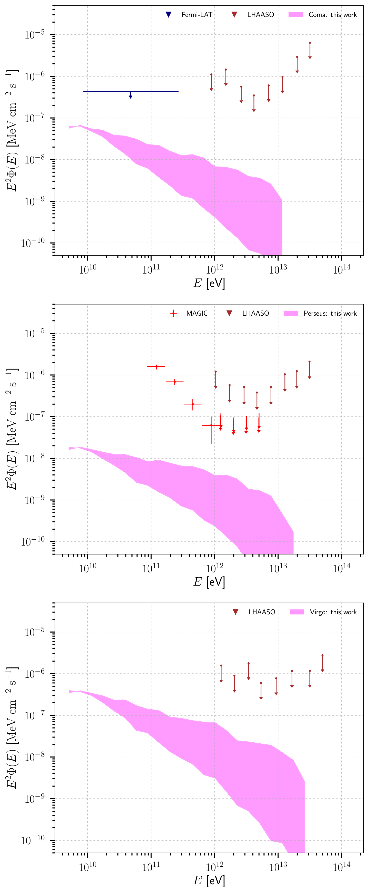
图注：The $\gamma-$ray spectra in our simulations, integrated over the entire volume of the Coma, Perseus, and Virgo clusters. The magenta band represents spectra for parameters $\alpha = 2.0-2.5\, \&\, E_\mathrm{max}= 10^{16}- 10^{17}\, \mathrm{eV}$. We also depicted upper limits of LHAASO for these clusters \(\citep{cao2025constraining}.\) Blue error bar in the top left panel represents the upper limits of Fermi-LAT for the Coma cluster above energy $10$ GeV \(\citep{xi2018detection}.\) The top right panel also shows the $\gamma-$ray flux observed by MAGIC from the central region (NGC$1275$) of the Perseus cluster \(\citep{ahnen2016deep}.\)
对应解读：建议重点查看的图表第3、4项；关键图表逐图导读中关于单个星系团γ射线谱、Perseus/NGC 1275 对比；模型预测与上限比较段落。
入选理由：这是最直接支撑论文核心结论的图：同时给出 Coma、Perseus、Virgo 的γ射线能谱预测带，并与 LHAASO 上限、Coma 的 Fermi-LAT 上限以及 Perseus 中心源 NGC 1275 的 MAGIC 观测对比。它能检验模型是否接近现有探测能力，也能显示 MAGIC 点源通量显著高于 ICM 弥散预测，是日报中关于AGN主导解释的关键证据。
来源与置信度：\(arxiv_source\)；high；\(arxiv_source\) / \(main_ApJSubm_latest.tex\):figure[2]
Fig05
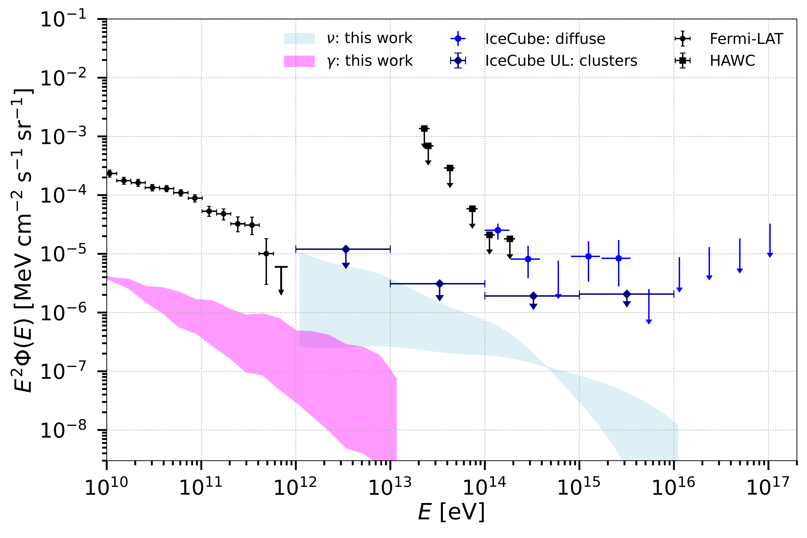
图注：The magenta ($\gamma-$rays) and blue (neutrinos) bands represent spectra for parameters $\alpha = 2.0-2.5\, \&\, E_\mathrm{max}= 10^{16}- 10^{17}\, \mathrm{eV}$. These bands represent the integrated fluxes of $\gamma-$rays and neutrinos (\(\SH{all-flavor})\) computed from our simulations for all clusters of masses $\gtrsim 5\times 10^{13}\, M_{\odot}$ within a distance $\sim 500$~Mpc. The diffuse $\gamma-$ray flux of Fermi-LAT \(\citep{ackermann2015spectrum}\) and HAWC upper limits \(\citep{HAWC2022limits}\) are depicted as well as the diffuse neutrino flux \(\citep{aartsen2015evidence, aartsen2015searches}\) and upper limits \(\citep{abbasi2022searching}\) predicted by IceCube collaboration.
对应解读：建议重点查看的图表第5、6项；关键图表逐图导读中关于本地宇宙累计γ射线/中微子图；模型与 Fermi-LAT、HAWC、IceCube 上限比较段落。
入选理由：该图汇总 500 Mpc 内、质量大于约 5×10^13 M⊙ 星系团的累计γ射线和全味中微子通量，并直接叠加 Fermi-LAT 弥散γ射线背景、HAWC 上限、IceCube 弥散中微子通量和未解析星系团上限。它最能支撑‘近邻星系团累计贡献仍低于弥散背景和 IceCube 限制’这一全局结论。
来源与置信度：\(arxiv_source\)；high；\(arxiv_source\) / \(main_ApJSubm_latest.tex\):figure[5]
Fig01
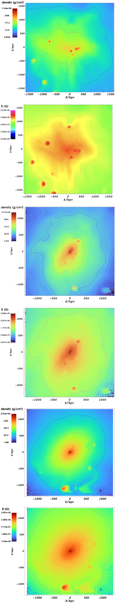
图注：The left column (top to bottom) represents 2D (XZ) central slices (at y=0) of the gas density of the Coma, Perseus, and Virgo clusters, respectively. The right column represents the magnetic field configurations of the same clusters. These maps are obtained from the SLOW MHD simulation at redshift $z\simeq0$ \(\citep{dolag2023simulating}.\)
对应解读：建议重点查看的图表第1项；关键图表逐图导读中关于 MHD 模拟气体密度和磁场空间分布的图1。
入选理由：该图展示 Coma、Perseus、Virgo 的气体密度中央切片和磁场结构，是后续宇宙线注入、传播和 pp 辐射计算的物理背景。日报强调需要检查核心、子结构、外围区以及高密度区是否与强磁场或潜在加速区重合，这张图正对应这些诊断量。
来源与置信度：\(arxiv_source\)；high；\(arxiv_source\) / \(main_ApJSubm_latest.tex\):figure[1]
Fig06
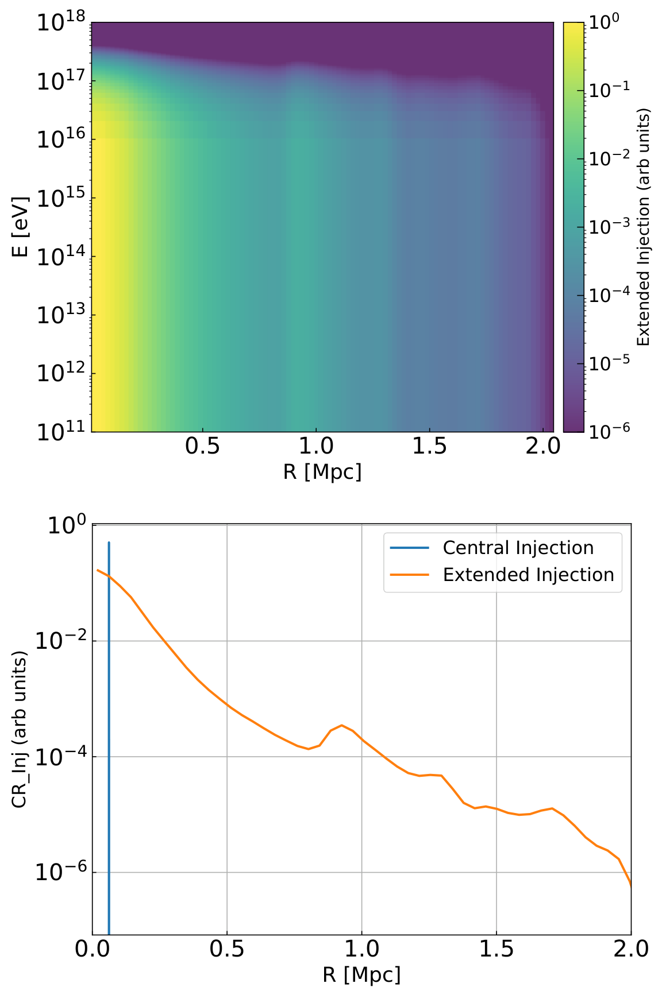
图注：Left panel: 2D map of extended injection as a function of radius and CR energy. The color scale shows the injection rate in arbitrary units. The injection follows the volume-averaged profile of gas density of a Perseus-like cluster. Right panel: Radial profile of CR injection. The central injection is represented by a point source (delta-function) at the cluster core, while the extended injection follows the volume-averaged density profile. Both are plotted in arbitrary units to compare the relative distribution.
对应解读：建议重点查看的图表第2、7项；关键图表逐图导读中关于宇宙线注入随气体密度标度、中心注入与扩展注入对比；模型参数退化关系段落。
入选理由：该图直接展示扩展 CR 注入在半径和能量上的二维分布，以及与中心点源注入的径向剖面对比。它支撑日报中关于‘注入随气体密度标度是否导致核心过度集中’以及‘中心源污染与弥散模板退化’的讨论，是理解模型空间假设的关键图。
来源与置信度：\(arxiv_source\)；high；\(arxiv_source\) / \(main_ApJSubm_latest.tex\):figure[6]
Fig03
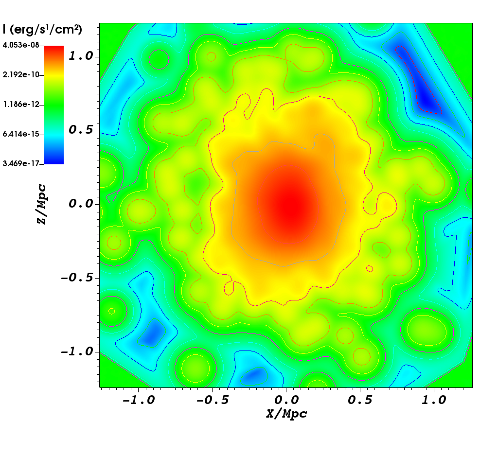
图注：Projected 2D $\gamma-$ray intensity map of a Perseus-like cluster obtained directly from our Monte-Carlo simulations.
对应解读：建议重点查看的图表第2项；关键图表逐图导读中关于传播后γ射线表面亮度或二维投影形态的讨论。
入选理由：该图给出 Perseus-like 星系团的二维γ射线强度图，能把气体/磁场背景和宇宙线传播结果转化为可观测的弥散辐射形态。相比单纯能谱图，它更适合检查核心亮度、扩展发射和空间模板问题，对区分点源与ICM弥散辐射有辅助价值。
来源与置信度：\(arxiv_source\)；high；\(arxiv_source\) / \(main_ApJSubm_latest.tex\):figure[3]
Fig04
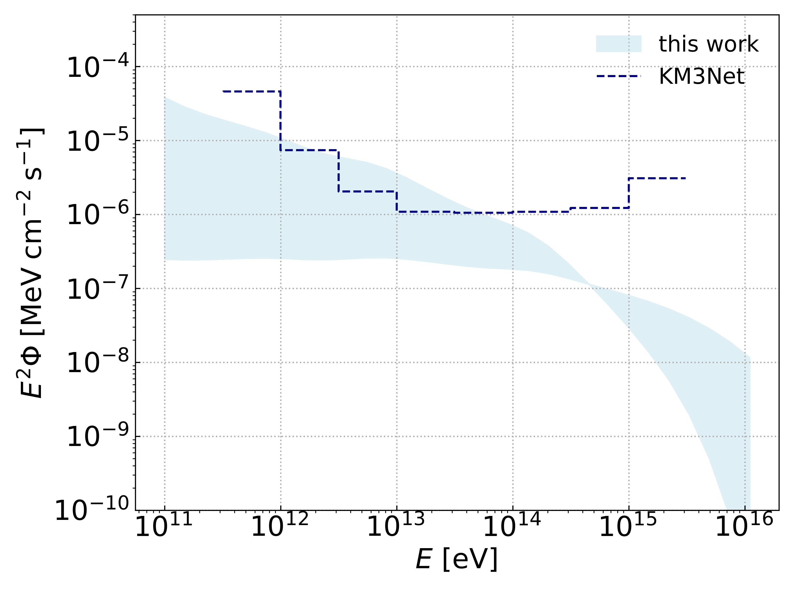
图注：All-flavor neutrino flux for Virgo cluster, for same parameters as in Fig. \(\ref{fig:gammaClusters}\) ($\alpha = 2.0-2.5\, \&\, E_\mathrm{max}= 10^{16}- 10^{17}\, \mathrm{eV}$). We also show the 90\% confidence level differential sensitivity of KM3NeT, calculated for an all-flavor neutrino flux \(\citep{aiello2024differential}.\)
对应解读：建议重点查看的图表第5项；关键图表逐图导读中关于单团中微子谱、全味通量和实验灵敏度比较的部分。
入选理由：该图展示 Virgo 星系团的全味中微子谱，并与 KM3NeT 90% 置信水平微分灵敏度比较，可用于检查中微子预测峰值能区、谱斜率和未来探测余量。虽然 IceCube 约束在 Fig05 中更关键，但该图补充了单个近邻星系团的中微子可探测性。
来源与置信度：\(arxiv_source\)；high；\(arxiv_source\) / \(main_ApJSubm_latest.tex\):figure[4]
强相关工作
这篇工作与长期的星系团 γ 射线非探测文献直接相关。Fermi-LAT 对 Coma、Virgo、Perseus 等近邻团以及星系团堆叠分析给出了强约束，通常限制了 ICM 中宇宙线压力相对于热压力的比例。IACT 观测则对 Perseus、Coma 等给出了 TeV 上限或中心源探测，但这些观测常受到 NGC 1275、M87 等 AGN 的影响。检索关键词可用 “Fermi-LAT galaxy clusters cosmic rays gamma rays”, “Perseus NGC 1275 MAGIC gamma-ray cluster”, “Coma cluster VERITAS HESS gamma-ray upper limits”。
在理论上，这篇论文属于强子宇宙线在星系团中产生 π0 γ 射线和中微子的研究传统，但方法更接近空间解析模拟加粒子传播。相关基础问题包括星系团并合激波加速效率、吸积激波、AGN feedback 注入宇宙线、MHD 湍流和宇宙线扩散。相反或张力观点主要来自更乐观的模型：若假设更高宇宙线加速效率、更强源演化、AGN/星暴成员星系贡献或更长驻留时间，星系团对 IceCube 中微子的贡献可能更高；但这类模型通常更容易受到 Fermi-LAT γ 射线上限约束。检索关键词可用 “IceCube unresolved galaxy clusters neutrino stacking”, “hadronic cosmic rays intracluster medium”, “gamma-ray constraints on cluster cosmic ray pressure”。
相似工作：
- https://arxiv.org/abs/2605.11858
- https://arxiv.org/search/astro-ph?query=Fermi-LAT+galaxy+clusters+gamma+rays+cosmic+rays&searchtype=all
- https://arxiv.org/search/astro-ph?query=IceCube+galaxy+clusters+neutrino+stacking&searchtype=all
基础理论 / 方法工作：
- https://arxiv.org/search/astro-ph?query=cosmic+rays+intracluster+medium+hadronic+gamma+rays&searchtype=all
- https://arxiv.org/search/astro-ph?query=structure+formation+shocks+galaxy+clusters+cosmic+rays&searchtype=all
- https://arxiv.org/search/astro-ph?query=radio+halos+galaxy+clusters+hadronic+model&searchtype=all
相反观点 / 张力线索：
- https://arxiv.org/search/astro-ph?query=galaxy+clusters+origin+IceCube+neutrinos&searchtype=all
- https://arxiv.org/search/astro-ph?query=Fermi+LAT+limits+cluster+cosmic+ray+pressure&searchtype=all
5. Are Single-Zone Emission models Sufficient to Explain GRB 220426A and GRB 230812B?
- 来源：arXiv / astro-ph.HE
- 链接：https://arxiv.org/abs/2605.11543v1
- 作者：Soumya Gupta, Sunder Sahayanathan, Saharsh Shanu, Rishabh Nath
- 评分：novelty 7/10，importance 7/10，relevance 10/10，final 9.05/10
- 推荐理由：直接研究 GRB 220426A 和 GRB 230812B 的 prompt emission 光谱宽度演化，挑战单区热/同步辐射模型并支持多发射区；GRB 与伽马射线高能天文高度相关。
中文题目：单区辐射模型是否足以解释 GRB 220426A 和 GRB 230812B？
做了什么：这篇论文用时间分辨谱分析检验两个伽马暴 GRB 220426A 和 GRB 230812B 的瞬时辐射是否能由单一区域的热辐射或同步辐射解释。作者关注的不是只看经验谱形拟合参数，而是看谱宽 \(\mathcal{W}\) 随时间的演化；在常见单区热火球或单区同步辐射图像中，随着喷流膨胀、冷却和粒子分布演化，谱宽通常预期会变窄。但他们发现这两个暴的 \(\mathcal{W}\) 随时间增加。这个结果说明，仅靠一个随时间冷却或软化的辐射区难以解释观测，提示瞬时辐射阶段可能由多个辐射区叠加而成，而且不同区域的相对贡献会随时间改变。
为什么重要：GRB prompt emission 的辐射机制长期存在争议：热光球、非热同步辐射、康普顿化以及多成分混合模型都能在某些能段拟合出类似的经验谱。谱宽是一个比单个峰值能量或低能谱指数更直接的形状诊断量，因为它衡量谱能量分布在峰附近到底有多窄或多宽。若谱宽随时间变宽，而单区热/同步模型一般预期变窄，这就是对“一个区域、一套粒子、一种主导辐射过程”假设的直接压力。
理论 / 观测 / 仪器方法价值：这项工作的价值在于把模型判别从单次时间 bin 的 Band 函数或 cutoff power-law 参数，推进到谱形随时间的演化诊断。对理论而言，它支持 prompt emission 的空间或物理多区结构，例如不同半径、不同磁化程度或不同碰撞壳层的贡献叠加。对观测而言，它提醒读者不能只比较经验模型的拟合优度，还应检查谱宽、残差和时间演化是否符合物理模型的内在预言。对方法而言，谱宽 \(\mathcal{W}\) 是一个可推广到大样本的诊断量，可用于筛选单区模型明显失效的 GRB。
为什么应该关注：如果你关心 GRB prompt emission 的物理起源，这篇文章值得看，因为它针对的是一个很基础但经常被弱化的问题：经验谱能拟合，并不等于物理模型成立。若多区叠加在这些暴中是必要的，那么用单区模型反推磁场、洛伦兹因子、电子能谱或光球半径都会带来系统偏差。它还对未来高时间分辨率、高能宽覆盖的 GRB 谱学提出了明确目标：不仅要测峰值能量和光变，还要跟踪谱宽如何随时间变。
展开详细解读：文章讲解、背景、理论、重点章节、图表与相关工作
文章详细讲解
科学问题：GRB 瞬时辐射的核心争议之一，是观测到的 keV–MeV 谱到底来自热光球辐射、非热同步辐射，还是多个物理成分的叠加。单区模型的吸引力在于参数少、物理图像清楚：一个辐射区域中热等离子体释放能量，或一群被快速加速的电子在磁场中同步辐射。但这类模型不仅要能拟合某一时刻的谱，还必须能解释谱形随时间如何演化。本文抓住的关键诊断量是谱宽 \(\mathcal{W}\)，即在谱峰半高处定义的宽度；如果一个区域冷却、膨胀或粒子分布逐渐耗散，许多简单模型会预期峰附近结构逐渐收窄或至少不应系统性变宽。
作者怎么做：论文针对 GRB 220426A 和 GRB 230812B 做时间分辨谱研究，比较观测谱宽 \(\mathcal{W}\) 的时间演化与单区热辐射、单区同步辐射情形下的预期。根据摘要，作者并不满足于经验谱拟合的结论，因为 Band 函数或类似经验模型常常能给出形式上可接受的拟合，却不能唯一对应到热火球或同步辐射机制。他们将谱宽作为更物理化的形状指标，用来判断谱峰附近是趋于变窄还是变宽，并据此检验单区模型的充分性。
关键结果：对 GRB 220426A 和 GRB 230812B，作者发现 \(\mathcal{W}\) 随时间增加，而不是像单区热爆发或单区同步辐射模型通常预期的那样减小。这一趋势意味着随着 prompt emission 发展，观测到的谱并不是一个单一辐射区简单冷却后的结果，而更像是多个辐射区或多个谱成分的相对权重在变化。例如早期可能由较窄的成分主导，后期另一较宽成分增强；或者不同半径、不同磁场强度、不同电子注入历史的区域叠加，使整体谱宽增大。
局限和下一步：从摘要能确认的是该工作集中在两个具体 GRB 上，因此它更像是对单区模型的有力个案挑战，而不是统计意义上对所有 GRB 的结论。谱宽的测量可能受到时间 bin 选择、探测器响应、背景扣除、能段覆盖和模型选择的影响；因此读者应重点检查作者是否对这些系统误差做了稳健性检验。下一步自然是把同样的谱宽演化诊断推广到大样本，并结合偏振、早期余辉、GeV 辐射或多仪器联合谱，区分“多区同机制叠加”和“多机制成分叠加”。
背景知识
GRB prompt emission 是高能天体物理中最难解释的瞬态辐射之一。它的各向同性等效光度可达 \(10^{51}-10^{54}\,\mathrm{erg\,s^{-1}}\)，持续时间从毫秒到数十秒不等，光变剧烈，谱峰常位于数十 keV 到数 MeV。尽管 Swift、Fermi/GBM、Konus-Wind 等仪器已经积累了大量样本，瞬时辐射机制仍没有定论。原因是观测谱通常只覆盖有限能段，而不同物理模型在该能段内可能产生相似的弯曲谱。
历史上，GRB prompt 谱常用 Band 函数、cutoff power-law 或黑体加幂律等经验模型描述。Band 函数低能谱指数、峰值能量 \(E_{\rm pk}\)、高能谱指数等参数能很好地表征观测，但这些参数并不直接等于物理量。所谓“同步辐射死亡线”、黑体成分寻找、光球模型和磁重联模型之间的争论，本质上都在问同一件事：经验谱形背后是否存在唯一、简单的辐射区和辐射机制。
现在重新审视谱宽特别有意义。过去很多工作强调低能谱指数是否比同步辐射理论极限更硬，或者 \(E_{\rm pk}\) 是否随光度演化；但谱宽提供了另一个角度。纯黑体非常窄，非热同步辐射较宽，多温黑体、康普顿化或多区叠加会进一步改变宽度。尤其在 Fermi/GBM 等数据可做较细时间分辨谱分析后，谱宽随时间的演化可以成为模型判别工具，而不只是静态分类指标。
该领域常见误区是：只要某个物理模型能拟合某个时间段的谱，就认为它解释了 prompt emission。实际上，GRB 光变高度非平稳，时间积分谱很容易把多个不同瞬时谱混合成一个看似平滑的宽谱。另一个误区是把单区同步辐射或单区热光球当作默认零阶模型，却忽略喷流内部可能有角向结构、径向分层、多个碰撞壳层、磁重联斑块或不同光球半径。本文正是从谱宽演化入手，提醒读者“单区”假设可能比看起来更脆弱。
基础理论 / 方法脉络
核心物理图像可以从谱峰附近的宽度理解。若辐射来自单温黑体，\(\nu F_\nu\) 谱在峰附近较窄；若来自非热电子同步辐射，谱形由电子能谱、磁场和冷却状态决定，通常比黑体宽；若多个温度、多个电子群或多个辐射半径叠加，峰附近会被拉宽。谱宽 \(\mathcal{W}\) 通常可定义为 \(\nu F_\nu\) 达到峰值一半时两侧能量的对数间隔，它对“成分混合”特别敏感。
单区热模型的简单预期是：辐射区膨胀和冷却后，特征温度下降，谱峰向低能移动，若没有越来越强的多温结构加入，归一化后的谱形不会任意变宽。单区同步辐射模型中，电子注入、冷却和磁场衰减会决定 \(E_{\rm pk}\)、低能谱指数和高能尾；在一些理想化情形下，随着粒子分布冷却或注入结束，峰附近结构也会趋于收缩或按可预期方式演化。本文摘要指出，这些场景下 \(\mathcal{W}\) 被预期随时间减小。
观测方法上，时间分辨谱分析通常先按光变划分时间 bin，然后对每个 bin 进行响应矩阵折叠拟合。真正与数据比较的不是源的理论光子谱本身，而是经探测器响应卷积后的计数谱。因此谱宽测量依赖于背景建模、能段选择、响应校准和经验模型选择。读者要注意，若时间 bin 太宽，谱演化会被人为混合，可能导致谱宽增大；若 bin 太窄，统计误差又会使半高宽不稳定。
一个重要退化是“单个宽谱”与“多个窄谱叠加”之间的退化。仅凭某一时刻的 \(\chi^2\) 或 C-stat，二者可能难以区分；但若宽度随时间系统性增加，并且与光变结构、峰值能量演化、残差分布相互一致，多区解释就更有说服力。因此本文的关键不是说同步辐射或热辐射一定不存在，而是说单一区域版本的这些模型不足以解释这两个暴的谱形演化。
公式与推导
谱宽通常从能量通量谱 \(S(E)=E^2N(E)\) 或等价的 \(\nu F_\nu\) 定义，其中 \(N(E)\) 是光子数谱。若 \(E_{\rm pk}\) 是 \(S(E)\) 的峰值能量，半高点 \(E_1,E_2\) 满足：
这里 \(E_1\) 和 \(E_2\) 分别是峰左侧和右侧半高能量。常用的对数谱宽可写为：
这个量越大，说明谱峰附近覆盖的能量范围越宽；它比单独的 \(E_{\rm pk}\) 更能反映谱形。
对单温黑体，光子谱可近似写成：
因此能量通量谱为：
其中 \(T\) 是温度，\(k\) 是玻尔兹曼常数。令 \(x=E/kT\)，归一化谱形只依赖 \(x\)，所以单温黑体的无量纲宽度基本固定；温度下降主要移动 \(E_{\rm pk}\)，不会自动产生不断增加的 \(\mathcal{W}\)。
对同步辐射，单个电子的特征频率可写为：
其中 \(e\) 是电子电荷，\(B\) 是共动磁场，\(m_e\) 是电子质量，\(\gamma_e\) 是电子洛伦兹因子，\(\Gamma\) 是喷流体洛伦兹因子，\(z\) 是红移。若一个区域中 \(B\)、\(\Gamma\) 和电子分布以相对简单的方式演化，谱峰位置会随这些量移动，但谱宽的演化受到电子能谱形状和冷却状态约束。
多区叠加可以形式化写为：
其中 \(i\) 标记不同辐射区或成分，\(A_i(t)\) 是随时间变化的归一化，\(\theta_i(t)\) 包含温度、磁场、电子能谱指数、峰值能量等参数。即使每个 \(S_i\) 本身较窄，只要不同成分的 \(E_{\rm pk,i}\) 或谱形不同，且 \(A_i(t)\)
) 的相对权重随时间改变，总谱 \(S_{\rm tot}\) 的 \(\mathcal{W}\) 就可能随时间增加。
在拟合数据时，理论光子谱必须经过仪器响应折叠：
其中 \(C_j^{\rm mod}\) 是第 \(j\) 个探测器通道的模型计数，\(R_j(E)\) 是响应矩阵，\(B_j(t)\) 是背景计数。谱宽结论最终应来自能在计数空间给出可接受拟合、且在源空间恢复稳定 \(\mathcal{W}\) 演化的模型。
模型拟合 / 应用方法
这类工作通常从时间分辨谱拟合开始。研究者先根据 GRB 光变选择若干时间区间，提取每个区间的源加背景谱、背景谱和响应矩阵，然后用 Band、cutoff power-law、黑体、黑体加幂律、同步辐射模板或多成分模型拟合。由于 GRB 计数常服从泊松统计，实际拟合常使用 C-stat、PG-stat 或类似似然，而不是简单高斯 \(\chi^2\)。拟合后从最佳拟合源谱计算 \(E_{\rm pk}\)、半高点和 \(\mathcal{W}\)，并用误差传播、MCMC 或参数后验抽样估计置信区间。
参数估计中的主要退化包括：低能谱指数与吸收/能段下限的退化，\(E_{\rm pk}\) 与高能指数的退化，黑体温度与非热连续谱归一化的退化，以及多个相近峰值成分之间的可辨识性问题。若 \(E_{\rm pk}\) 靠近仪器能段边界，半高点可能落在观测范围之外，\(\mathcal{W}\) 会变得模型依赖。若时间 bin 内 \(E_{\rm pk}\) 快速漂移，时间积分后会产生人为谱宽增大，这必须通过更细分 bin 或模拟检验排除。
对本文这样的结论，读者应特别关注作者如何定义 \(\mathcal{W}\)、如何估计其时间误差、是否比较了不同经验模型下的宽度趋势，以及是否做了仪器响应和背景系统误差检验。若所有合理模型都显示 \(\mathcal{W}\) 随时间增加，且该趋势超过统计误差和 binning 系统误差，那么多区解释更可信。反之，如果趋势只在某个模型或某个时间划分下出现，则结论需要谨慎。
实际应用上，谱宽演化可作为 GRB prompt emission 的分类指标。研究者可以在大样本中寻找 \(\mathcal{W}\) 单调减小、近似恒定或增加的事件，并与光变脉冲数、谱滞后、峰值光度、红移、GeV 探测和早期余辉性质比较。这样可以判断多区结构是否只在少数复杂暴中出现，还是 prompt emission 的普遍特征。
重点章节 / 结果段落怎么读
-
引言和科学动机：读者应先看作者如何界定“单区模型”的含义，以及他们为什么选择谱宽 \(\mathcal{W}\) 而不是只使用 Band 参数或低能谱指数。重点是确认论文检验的是单区热/同步模型的充分性，而不是否定所有热辐射或所有同步辐射。
-
数据和样本选择：重点查看 GRB 220426A 和 GRB 230812B 的探测仪器、时间覆盖、能段范围、信噪比和时间 bin 划分。两个暴是否有清晰的多脉冲结构、是否存在高背景时段、峰值能量是否落在仪器敏感能段内，都会影响谱宽测量。
-
谱分析和 \(\mathcal{W}\) 定义：这一部分应说明使用哪些经验或物理模型拟合时间分辨谱，半高宽如何从拟合谱中计算，误差如何得到。读者应检查作者是否在源空间定义 \(\mathcal{W}\)，同时在计数空间保证拟合质量。
-
结果：重点看 \(\mathcal{W}\) 随时间的曲线，以及它与 \(E_{\rm pk}\)、光通量、谱指数的关系。本文核心结论是两个 GRB 的谱宽随时间增加，因此结果段应该给出该趋势的统计显著性和模型稳健性。
-
讨论和物理解读：这里应关注作者如何论证单区热爆发或单区同步辐射预期 \(\mathcal{W}\) 变窄，以及为什么观测到的变宽更自然地指向多区发射。读者还应检查是否讨论了替代解释，如时间积分效应、隐含成分、仪器能段限制或复杂电子注入历史。
-
稳健性检验或附录：如果论文有附录，应优先查看不同 binning、不同背景区间、不同谱模型、响应矩阵选择和模拟恢复测试。这些内容决定了谱宽增加是物理信号还是分析流程造成的假象。
建议重点查看的图表
-
光变曲线和时间 bin 图：检查两个 GRB 的 prompt 光变结构，时间 bin 是否跨越多个脉冲或快速谱演化阶段；若 bin 太宽，谱宽可能被人为拉大。
-
代表性时间分辨谱及最佳拟合模型：看 \(\nu F_\nu\) 谱峰是否被仪器能段充分覆盖，半高点是否都在可靠能段内，模型残差是否有系统弯曲。
-
\(\mathcal{W}\) 随时间演化图：这是核心图。应看误差条、趋势显著性、两个 GRB 是否都显示一致的增加，以及是否存在个别异常点主导结论。
-
\(E_{\rm pk}\)、通量和谱指数随时间图：检查谱宽增加是否仅仅由峰值能量穿越探测器能段导致，或是否与通量脉冲、硬到软演化、强度追踪行为相关。
-
模型比较表：查看不同经验模型或物理模型的 C-stat/PG-stat、AIC/BIC、自由度和参数误差。一个模型拟合优度略好并不一定物理可信，残差结构更重要。
-
单区模型预言与观测对比图：如果有理论曲线，应看单区热/同步模型给出的 \(\mathcal{W}(t)\) 是否确实下降，以及观测点偏离是否超过模型不确定性。
-
稳健性或模拟检验图：检查不同时间 bin、背景选择、响应处理下 \(\mathcal{W}\) 趋势是否保持。若作者做了假源注入恢复，应看输入恒定/下降谱宽是否会被误恢复为上升。
关键图表逐图导读
图 1：通常应是 GRB 220426A 和 GRB 230812B 的 prompt 光变。横轴为触发后时间，纵轴为计数率或能量分辨计数率，不同颜色可能代表不同能段。读图时要看时间 bin 的边界是否落在自然脉冲结构上，而不是把多个快速变化脉冲混在一起。若谱宽增加主要发生在多脉冲重叠阶段，多区解释会更自然，但也要警惕时间积分效应。
图 2：代表性时间区间的能谱拟合图。横轴为能量，纵轴可能是计数谱、展开后的 \(\nu F_\nu\) 或残差。数据点显示观测，模型线显示最佳拟合谱，下面的 residual panel 显示残差。应检查峰值两侧是否都有足够数据约束半高点；如果高能侧只有上限或低能侧接近阈值，\(\mathcal{W}\) 会更依赖模型外推。
图 3：\(\mathcal{W}\) 随时间变化图。横轴为时间，纵轴为谱宽 \(\mathcal{W}=\log_{10}(E_2/E_1)\)。核心读法是看斜率是否为正、误差条是否允许恒定宽度、是否两个 GRB 都表现出同方向演化。读图陷阱是不要只看连线趋势，要看每个点的后验不确定性和相邻点相关性。
图 4：\(E_{\rm pk}\)、通量、低能谱指数或温度随时间的联合演化。横轴仍是时间，纵轴分面显示不同谱参数。应看谱宽增加是否伴随峰值能量下降、通量衰减或谱指数变化。若 \(E_{\rm pk}\) 向低能移动并接近仪器边界，需谨慎判断宽度是否被能段截断影响。
图 5：观测谱宽与单区模型预期的对比。横轴可能是时间或归一化时间，纵轴为 \(\mathcal{W}\)，数据点是观测，曲线或阴影区是热模型/同步模型预测。重点看观测点是否系统性落在模型允许区之外。若模型阴影区很窄，说明作者采用了强假设；若阴影区很宽但仍无法覆盖观测，结论更强。
图 6：多区叠加示意或多成分拟合结果。若存在此类图，通常会显示若干较窄成分如何叠加成更宽的总谱。读图时要区分“示意性解释”和“实际统计优选模型”：多区图像物理上合理，不等于参数已被唯一确定。
论文原图 / 可嵌入图片
Fig03
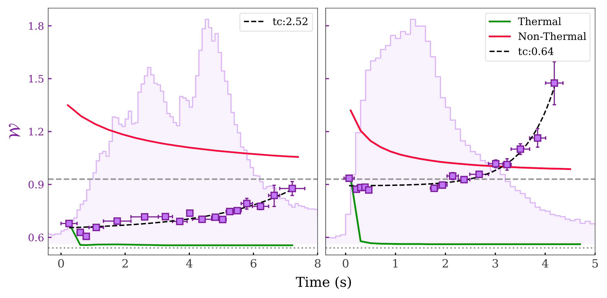
图注：In this figure, the temporal evolution of \(\wid\) and comparison with thermal and non-thermal emission scenarios is shown. The evolution of \(\wid\) (purple squares) for the case of \(\grb\) is shown in the left and on the right for GRB 230812B. The grey dotted line represents the \(\wid\) of the Planck function and the grey dashed line corresponds to the \(\wid\) of the synchrotron spectrum obtained from a mono-energetic electron distribution. The green solid line in both figures indicates the evolution of spectral broadness under the expanding fireball scenario. The red solid line portrays the evolution of \(\wid\) of the synchrotron spectrum from the Maxwellian distribution of particles. The black-dashed line in each panel depicts the best-fit exponential function with characteristic evolution time, tc.
对应解读：对应“建议重点查看的图表”第3项和第6项，以及“关键图表逐图导读”图3/图5：\(\mathcal{W}\) 随时间演化，并与单区热模型、同步辐射模型预期对比。
入选理由：这是本文核心结论的直接证据图：同时给出 GRB 220426A 与 GRB 230812B 的谱宽 \(\mathcal{W}\) 时间演化，包含观测点、Planck 与单能电子同步辐射参考宽度、膨胀火球模型曲线、Maxwellian 同步辐射曲线以及指数拟合趋势。它最能检验日报强调的“谱宽是否随时间增加、是否系统性偏离单区模型预期”。
来源与置信度：\(arxiv_source\)；high；\(arxiv_source\) / \(manuscript_width_evolution_GRB.tex\):figure[3]
Fig04
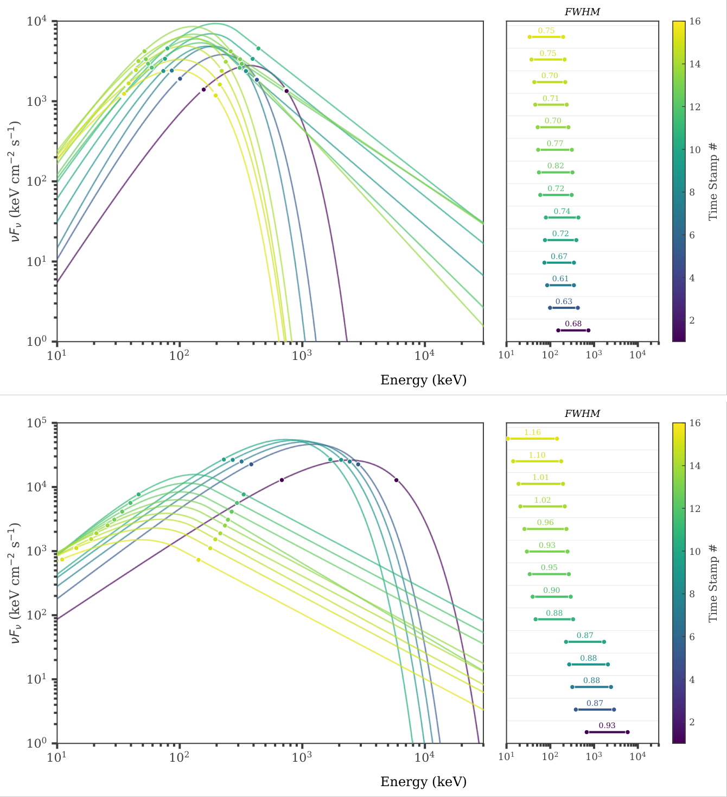
图注：The top and bottom figures represent the \(\grb\) and GRB 230812B, respectively. In each figure, the spectral evolution is shown on the left plot and \(\wid\) for each bin on the right plot. The color bar indicates the time-bin number. The dots on both the left and right plots mark the $E_{-1/2}$ and $E_{+1/2}$.
对应解读：对应“建议重点查看的图表”第2项和第3项，以及“关键图表逐图导读”图2/图3：时间分辨谱形、半高点 \(E_{-1/2}\)、\(E_{+1/2}\) 与每个 bin 的谱宽定义。
入选理由：这张图直接展示每个时间 bin 的谱演化和用于计算 \(\mathcal{W}\) 的半高点位置，可检查谱峰两侧是否被数据能段约束、宽度增加是否来自真实谱形变化而非单纯模型外推。它是理解 Fig03 中 \(\mathcal{W}\) 点如何得到的关键支撑图。
来源与置信度：\(arxiv_source\)；high；\(arxiv_source\) / \(manuscript_width_evolution_GRB.tex\):figure[4]
Fig02
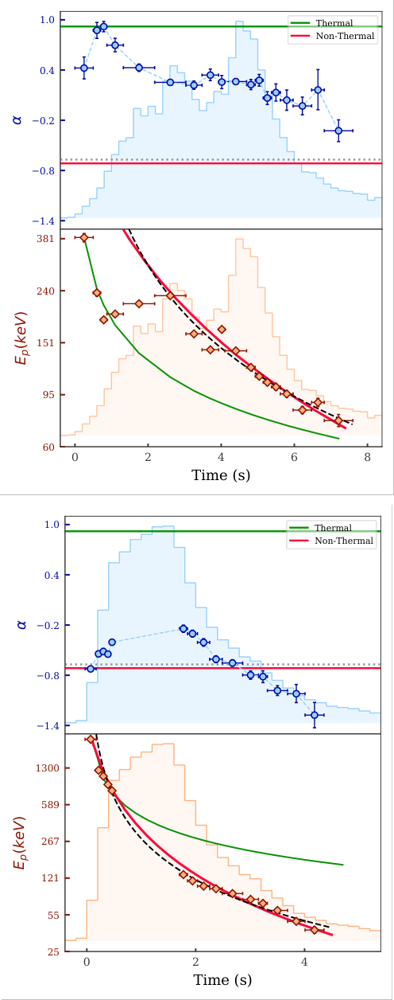
图注：This figure depicts the evolution of the best-fit spectral parameter for Fermi/GBM observations GRB 220426A (top) and \(\gr\) (bottom). In each plot, the upper and lower panels represent the evolution of the low-energy index $\alpha$ (blue circles) and the variation in peak energy $E_p$ (dark yellow diamonds), respectively. The green solid line in the upper panel is the slope of the low-energy index of the Planck function ($\sim 1$). The red solid line in the same panel is the slope of the low-energy index of the synchrotron spectrum due to the Maxwellian particle distribution. The grey dotted line in the upper panels of each plot marks the LOD. The green solid line in the lower panel represents the evolution of $E_p$ under the fireball scenario, whereas the evolution of synchrotron emission $E_p$ is represented in red. The photospheric radius of the expanding fireball in the case of \(\grb\) is $\sim 10^{13}$ cm and $10^{14}$ cm in the case of GRB 230812B. The black dashed line in the bottom panel of each figure portrays the power law fit to the data.
对应解读：对应“建议重点查看的图表”第4项，以及“关键图表逐图导读”图4：\(E_{\rm pk}\)、低能谱指数 \(\alpha\) 随时间演化，并与热/同步模型预期比较。
入选理由：该图给出两个 GRB 的最佳拟合谱参数演化，特别是低能谱指数和峰值能量 \(E_p\)。它可用于判断谱宽增加是否伴随 \(E_p\) 漂移、硬到软演化或谱指数变化，从而排查日报中提到的仪器能段边界和谱演化退化问题。
来源与置信度：\(arxiv_source\)；high；\(arxiv_source\) / \(manuscript_width_evolution_GRB.tex\):figure[2]
Fig01
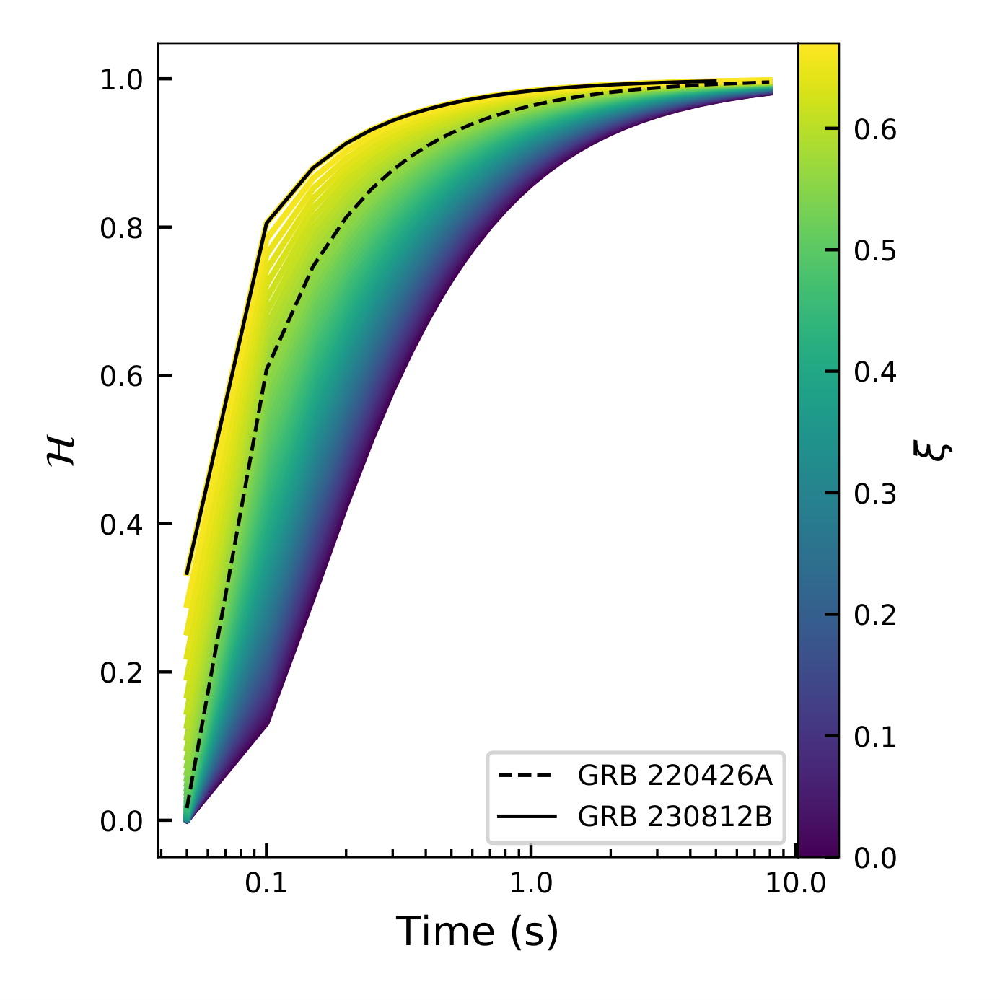
图注：Under the fireball scenario, the change in \(\rat\) with expansion is shown for different $\xi$. The black dashed line depicts the trend for \(\grb\) where \(\tnt\) is 8s and \(\ind\) is 0.57. On the other hand, the black solid line represents the evolution in the case of \(\gr\) where \(\tnt\) is 5s and \(\ind\) is 0.67.
对应解读：对应“建议重点查看的图表”第6项，以及模型拟合段落中关于单区火球模型预言的讨论。
入选理由：该图展示火球情景下某一诊断量随膨胀的理论演化，并标出两个目标 GRB 的趋势参数。虽然它不是直接的观测谱宽时间序列，但能补充说明作者如何构造单区热火球模型预期，是解释 Fig03 中绿色模型曲线物理背景的辅助图。
来源与置信度：\(arxiv_source\)；high；\(arxiv_source\) / \(manuscript_width_evolution_GRB.tex\):figure[1]
Fig05
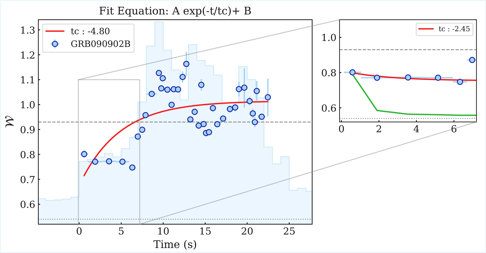
图注：The figure represents the evolution of \(\wid\) for the case of GRB 090902B. The red line depicts the best-fit exponential function. The grey-dashed and grey-dotted line represents the \(\wid\) of the synchrotron spectrum obtained from the mono-energetic electron distribution, and the Planck function, respectively. The zoomed-in plot on the right depicts the trend of \(\wid\) during the first 8 s. The red line depicts the best-fit exponential function during the initial phase. The green line represents the evolution of \(\wid\) for the expanding fireball scenario.
对应解读：对应扩展背景：谱宽演化诊断在其他 GRB 个例中的比较，而非日报重点的两个目标 GRB。
入选理由：该图展示 GRB 090902B 的 \(\mathcal{W}\) 演化和火球模型对比，可作为方法参照或历史个例比较。但它不属于本文摘要强调的 GRB 220426A 与 GRB 230812B 主结果，因此科学优先级低于前四张。
来源与置信度：\(arxiv_source\)；high；\(arxiv_source\) / \(manuscript_width_evolution_GRB.tex\):figure[5]
强相关工作
这篇工作与 GRB prompt emission 的几个传统方向直接相关。第一类是经验谱学传统，即用 Band 函数描述大量 BATSE、Fermi/GBM 暴，并研究 \(E_{\rm pk}\)、低能谱指数和光度的统计关系。检索关键词可用 “GRB prompt emission Band function spectral width Fermi GBM”。第二类是光球模型和多温黑体模型，关注热成分如何被相对论喷流的角向结构、亚光球耗散或康普顿化展宽；检索关键词可用 “GRB photospheric emission multicolor blackbody spectral width”。
另一条相关线索是同步辐射模型及其困难。经典同步辐射模型面临低能谱指数、冷却时间和辐射效率问题，但磁场衰减、持续加速、边缘冷却或小 pitch-angle 分布等修正可以缓解部分张力。本文的谱宽演化诊断与这些工作形成互补：它不是只问某个时间段的低能斜率是否允许同步辐射，而是问整个 prompt 阶段的谱形演化是否符合单区同步辐射的内在预期。检索关键词可用 “GRB synchrotron line of death prompt emission spectral evolution”。
也应把本文放在多区或多成分 prompt emission 的背景下理解。多脉冲 GRB、内激波、磁重联湍流、结构化喷流和角向时间延迟都可能导致不同谱成分在时间上重叠。与单区模型相反，这类模型天然允许 \(\mathcal{W}\) 增大，但也带来参数不唯一的问题。后续关键是用更高信噪比样本、偏振观测和多波段关联来打破退化。
相似工作：
- https://arxiv.org/abs/2605.11543
- https://ui.adsabs.harvard.edu/search/q=GRB%20prompt%20emission%20spectral%20width%20Fermi%20GBM
基础理论 / 方法工作：
- https://ui.adsabs.harvard.edu/abs/1993ApJ...413..281B/abstract
- https://ui.adsabs.harvard.edu/abs/1979ApJ...232L.107P/abstract
- https://ui.adsabs.harvard.edu/search/q=GRB%20photospheric%20emission%20synchrotron%20prompt%20emission
相反观点 / 张力线索：
- https://ui.adsabs.harvard.edu/search/q=GRB%20synchrotron%20line%20of%20death
- https://ui.adsabs.harvard.edu/search/q=GRB%20prompt%20emission%20photospheric%20versus%20synchrotron
- https://ui.adsabs.harvard.edu/search/q=GRB%20time%20resolved%20spectroscopy%20Band%20function%20thermal%20component
说明
评分由 LLM 给出初评，再由本地阈值策略过滤；IACT、TeV 伽马射线和高能中微子天文学按重点方向处理。